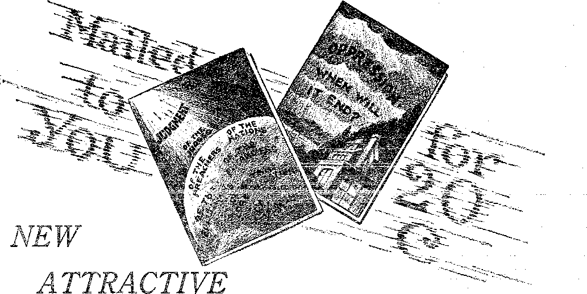

A JOURNAL OF FACT HOPE ANU COURAGE

mmmniiiEmimminmiimmimimmimminmmmm in this issue
FAIRS AND EXPOSITIONS
PRACTICAL DIETETIC RULES
DEATH BY SERUM ROUTE
“PROOF OF THE PUDDING”
A WARNING lecture broadcast by Judge Rutherford
EVERY OTHER WEDNESDAY 5c a copy - $1.00 a year - Canada & Foreign $1.50
Volume X » No. 250 ' April 17, 19 2 9
Contents
MM-........ " ................................'------------
Labor and Economics
Talking Movies Ruining Musicians ............ - LSli
Women Wage-Earners ....... . . 4(;3
Employe Stock Ownership . , . . ...... . , ' = . 463
Social and Education.!i.
Feminine Confusion in Turkiy , .
French Disregard of Justice ....
Women Stronger than Men ............... 46i
Finance—Commence— 'l’i; a nspodt at ion
South Carolina's Great Dani ............,
An Eight-Thousand-Mile Telephone Call
Judging the World’s Prosperity
Rejuvenating of the lee Industry ...
Political—Domestic and , Foih'.ion
Rumania's Stolen Railroad ....
Unfair Immigration Regulations
Agriculture and Husbandry
Home and 11 cat th
Good Health Dietetic Rui.es .............. 451
•’The Proof of the Pudding" .............. 463
Travel and Miscellany
A Swedish Colporteur In Alaska
Belicion and Philosophy Demons Back Ur Tlimit Doctrines ....
Moke Tiny Sharpshooters ..............
Bible Questions and Ans writs .............. 478 The Children’s Own Radio Story ............ 479
Published every other Wednesday at 117 Adams Street, Brooklyn. N. V., U, S. A., by WOOLWORTH, KNORR & MAR TIN
Copartners and Proprietors Address: 111 Adams Street, Brooklyn, N, Y., U, S, A,
CLAYTON J. WOODWORTH. . Editor ROBERT .1. .MARTIN . . Business Manager NATHAN H. KNORR.. Secretary and Treasurer '
1’ivh Cents a Copy—,81.00 a Year Make Remittances to GOLDEN AGE A'otiee to Subscribers: We do not, as a rule, send an acknowledgment of a renewal or a new subscription. A. renewal blank (carrying notice of expiration) is sent with the journal one month before the subscription expires. Change of address, when requested, may be expected to appear on address label within one month,
. Foreign Offices
British s s « « e . » 34 Craven Terrace, London, W. 2, England, Canadian , . , , . 40 Irwin Avenue, Toronto 5, Ontario, Canada Australasian 495 Collins Street, Melbourne, Australia
South African ..... 6 Lelie Street, Cape Town, South Africa, _
Entered as second-class matter at Brooklyn, N, Y.; under the Act of March 3, 1819,
Volume X Brooklyn, N. Y., Wednesday, April 17, 1929 Number 250
Good Health Dietetic Rules1
THE knowledge of the chemistry of foods and their effect upon the human body, herein expressed, has been gleaned from the teachings and works of V. G. Rocine, Rocine School of Human Nature Study, 711 Kimball Bldg., Chicago, Ill.
Especial acknowledgment is given to Dr. Ralph Shadduck, of Portland, Oregon, a pupil of Dr. Rocine, for the many dietetic truths learned under his tutelage. Other sources from which the ideas herein expressed have been gleaned are, the naturopathic and dietetic scholars of the world in general, and Dr. Geo. Starr White, M.D., N.D., Dr. Henry Lindlahr, M.D., D.O., and Dr. Geo. Clements, N.D., D.C., in particular.
General Dietetic Health Rules
Pain is a symptom. It is not a disease or a cause of disease. It is a sit-up-right-now-and-begin-to-take-notice warning signal by which Nature tries to warn you that there is something wrong and that unless you do something about it, you are in danger. Sandbagging, paralyzing or suppressing the nerves of feeling which convey the pain message is not a cure. Bell-ans, aspirin, or other drug store or doctor’s kit palliatives accomplish nothing permanent, except harm.
Nausea and vomiting following a meal is not a plea for a “tonic” or a “digestive”, but a plea for rest, a sign that your digestive system has been overtaxed and is out of order, a closed-for-repairs sign. Natural forces of repair and recuperation will take care of your stomach and digestive system when you cease to abuse it. Nature can and will, if you will give her an opportunity. .
Medical practice (and this includes all schools of medicine) is a fruitless routine of palliatives and symptom-tinkering; meddling with senses and functions of the body, all of which leave an aftermath of complications that are worse than the original malady for which the palliatives were given, and all of which complications are far more difficult to eradicate or overcome than the original malady. Every method or measure that is directed at the removal of symptoms rather than the removal of causes is evil.
Disease is an evidence of ignorance, partly on the part of the possessor, largely on the part of those responsible for the teaching of the individual. Of those who give wrong therapeutic or dietetic advice, and by far the worst of these offenders, are the members of the medical profession.
“All the most prevalent and fatal maladies now afflicting the human race are either directly or indirectly traceable to a dietetic origin,” says Dr. Samuel G. Willan.
Dr. Willan is the author of a rather severe indictment of the unthinking portion of the medical doctors, when he says, “Shall we turn to the medical doctor for dietetic advice? Such a course would be absurd; for while the laity usually looks to the doctor, the doctor is usually a dietetic dunce who knows not how to feed himself, who sheds his teeth, his hair and his healthy color quite as young as any of his patients, and is (usually) a confirmed and incurable dyspeptic at thirty-five.” .
How drugs and medicines “cure”: Dr. Richard C. Cabot, M.D., of Boston, is recognized by the medical fraternity as one of the foremost medical men in America today. Health Culture, for March, 1928, page 115, quotes Dr. Cabot as follows : “Typhoid fever has a 10 percent mortality. That means that in ninety cases out of a hundred it cures itself (Nature cures), for we do nothing really curative. Pneumonia has a 25 percent mortality,. That means that seventy-five eases out of every hundred cure themselves. So we c ild go on through the list. One lists about 215 diseases known to medical science, and of these there are eight or nine that we can cure by drugs or surgery.”
451 ■
The doctor does not specifically list the “eight or nine” diseases that can be “cured by drugs or surgery”. This leaves at least 206 out of the 215, or 95.8 percent of all diseases, admittedly incurable by drugs or surgery. In the light of those figures, is not the term “medical science” a joke? Aside from a receipted doctor’s bill, what do the possessors of any of those 206 diseases get when they employ a state-recognized representative of “medical science”?
“Man has degenerated—this degeneration due solely to his diet,” says Chas. De Lacy Evans, M.M.D., M.E.S., in his book, How .to Prolong Life.
Every one is on a diet. Some are on a correct diet and are well. Most people are subsisting on an incorrect diet and are ill, and daily growing worse. Can “the science of medicine” cure you of your dietetic shortcomings? Impossible, Natural food: What is natural food? All animals of the wild in their native state subsist on natural food, which is uncooked, unmixed and unseasoned. No other foods can be said to be wholly natural. This is important. Grasp its importance, and you are well on the road to recovery, on the road to better health.
Altered diet: Since the discovery of fire, man has endeavored to nourish his body with cooked food, most of it mixed and highly seasoned. The net result of this altered diet has been altered vital function.
Old age: How “old” is old. age? All animals of the wild of which we have record will live an average of seven (7) times their bone maturity. Man gets his bone maturity at 28 years. If lie lived seven times his bone maturity, as animals do, he would live to seven times 28, or 196 (nearly two hundred) years; yet most men die before they have lived one and one-half times their bone maturity (42 years); three times bone maturity, or 84 years, is considered exceptional. The big difference between what mankind should live and what he does live, is only a part of the terrible price man is paying for his dietetic ignorance. .
Causes of disease: Some diseases are purely mental in origin. Other diseases are mechanical
in origin, as a dislocated bone, a ligament or muscle tension, pressure on nerves from spinal misalignment, etc., a class of diseases calling for the services of a mechano-therapeutist, be it Swedish massage, osteopathy, chiropractic or other form of mechanical treatment. Most diseases are chemical in their origin, from cooked food, wrong combinations of food, foods containing an excess of chemicals not needed or required by the body, foods lacking in the chemicals which the body needs and must have in order to maintain good health, ’
The careful reader will please note that we . have ignored the medical doctor’s chief stock-intrade theory of disease, namely germs.. This . was not an oversight. There are germs; but if they were one-half as deadly as the medical doctor asserts them to be, we should all have been killed by the deadly germs before we had an opportunity to develop the microscope by which germs were discovered. There are infectious diseases. There are no contagious dis-........
eases. Eat the right foods,.....keep an alkaline. ...
blood stream, and you rnay- Jive immune from.....
germ invasion. . A ■ ; < d A " :
Most disorders, from tooth-decay to diabetes, - ■ from constipation to consumption, from-palsy-......
to peritonitis, from, neuralgia to neurasthenia, are the direct .results of cooked food eatrni in too great quantity and in wrong combination, and these and.most ■otlmn;ailments.cambe^^F£medied:;..; only by the removal of the‘underlying causes. This is soniethina’ that may be understood without medical education, and something that . should be taught in m ery grade school. .....
Wild animals eat when, they are hungry, when they can get. it. If ill or indisposed, they will not eat. Man eats by the clock: whether he needs it or not; and'.if ill,Me. keeps on eating.,.If.his whole nature rebels at food, he. “takes a tonic by doctor's orders" and has some espeeialh tempting dishes prepared for his consumption.
“Food is food until fooled with,” says Alfred McCann, whose book, The Science, of Eating, should be in every school library and public library in the land.
Mankind cooks food to gratify taste and appetite. Man should choose food to satisfy his bodily requirements. Grasp the importance of all that is said and implied in those two sentences.
Vegetable life draw's its sustenance from inorganic matter, 'Animal life, including man, lives upon organic matter. Nature lias made a wise provision that inorganic matter can not become an integral part of man’s cellular structure. If such were not the case, man would be a solid mass of lime, silicon, iron, gypsum and other inorganic substances from the water he drinks before he is ten years old.
Medicines are in the greater part inorganic, and according to Nature’s wisdom are kept out of man’s cellular structure. If taken internally they clog the blood stream, the arterial walls, the joints, etc., but they can not become a part of the cellular structure.
Cooking is a process of producing chemical and structural changes in food: changing it from organic food into inorganic matter. Nature surrounded every grain of starch with a cellulose coat, intending for you to break down this coat with your teeth, thus mixing it with saliva during the process. Milling and cooking now breaks down this coating, causing chemical and structural changes in the food, detrimental to your health.
Learn to eat and like food as Nature prepares it. This is real food: food that will get you well if you are ill, and, if you are well, will keep you well. Natural foods as prepared by Nature are uncooked, unmixed, and unseasoned (with spices, peppers, ketchups and granulated sugar). There is a seasoning, but it is put there by Nature. When we speak of seasoned food, we mean food that is artificially seasoned.
The cooked diet, to which most people are accustomed, is a diet wrong to begin with. It is wrong, (1) because it is cooked, (2) because it is a wrong combination of food, (3) because it is too heavy with starch, (4) because it is too heavy with protein, (5) because it is too heavily seasoned with condiments, (6) because it is a diet deficient in the life-giving organic mineral salts, or (7) because it is too heavy with sugar.
Begin at once to cut down on the amount of cooked food. Cut down on the sugar; cut down on the starch and protein portion of your meal and substitute a sufficient quantity of fruits and non-starchy vegetables and raw leafy vegetables to satisfy the cravings of appetite. Many of the fruits and vegetables are excellent raw, others have to be cooked (or at least your food habits are such that you think they have to be cooked); but, raw or cooked, substitute them for the cooked, sugared and seasoned starch and protein diet -to which you have been accustomed.
Calories: Pay no attention to any theory of diet which stresses the caloric theory of diet. Experimental dietetics exploded the caloric theory many years ago. Calories have to do with heat measurement. You may rightly measure T.N.T., dynamite or gasoline in terms of calories, but not foods. Of the foods (so called), canned salmon heads the list as highest in caloric content; yet common experience has proven that it requires a wonderful constitution to eat of canned salmon for two successive meals without serious digestive disturbances. Man is an admirably constructed dynamo capable of creating and transmitting vital energy, not an internal combustion engine that must be stoked.
Vitamins: One hears much these days of "vitamins”. No vitamin has ever been seen, examined or chemically isolated. The medical profession in general, certain dietetic cults, and an amazing number’ of manufacturers of devitalized, demineralized and demoralized “foods” all stress the vitamin theory. They have even named them, vitamin “'A”, “B”, “C” and on down the alphabet to the latest one “discovered” when the packing-houses needed a market for its liver, vitamin “F”.
Naturopathic physicians deny the existence of any vitamins. They claim that the things called vitamins are that property (a) which the Yogi speak of as “prana”, or the life-giving element which is found only in uncooked seeds, or (b) which will be found to be the elements which the naturopaths have always spoken of as organic mineral salts. These salts may be found, analyzed, chemically isolated and understood. Some of the foods said to contain vitamins we know contain these organic mineral salts. The claims of others, such as the makers of a well-known brand of soups, another of ketchups, and others who manufacture for sale sterilized package and canned foods will be found upon proper investigation to be without the necessary facts to substantiate their claims.
Food habits: Our food habits are established in youth, at which time the bodily functions are perfect and the growing body is getting its greatest amount of healthful outdoor exercise in the form of play. At that time the food intake must be of sufficient quantity to provide material for the growing body, plus an additional supply to furnish the boundless energy. After the body is grown it does not need so much food. Change your habits and cut down your food intake. Eat’ to supply yoftr lio'dily needs, not to gratify a food habit.
Whole-wheat or whole-grain breads contain most of the mineral elements to be found in the body, and for this reason they are superior to white-flour breads. White-flour breads are poor by reason of the white flour’s having been robbed of most of its elements in the process of milli g and the addition of aluminum, bone dust and white clays and other inorganic matter in the bleaching process.
Danger: If you change from white-flour to whole-grain breads, there is still the danger of eating too much bread in a day. Remember that bread is a starch food, and govern your consumption of it accordingly. Children require a greater quantity of starch foods than do grownups.
When starch is not starch: The body does not handle starch as starch. Before starch may become an integral part of the cellular structure it is changed by the liver and pancreas into a form of sugar. Every one consumes too much starch; which is another way of saying, too much sugar. If in addition to this excess starch consumption, you pile on granulated (or any other) sugar by the spoonful, or consume equal quantities of sugars, disguised as syrups, jellies, jams, pies, cookies, cakes or other “goodies”, you will understand that this excess sugar load requires the expenditure of a great amount of vital energy to get this excess chemically changed into some form of pus so that it may be expelled from the system. Here is one source of “that tired feeling”, as well as of a host of other ills.
Contrast the difference between chewing a stalk of sugar-cane to get sweets and the modern method of crushing the cane with powerful machinery to extract the juice. Contrast the difference between the bodily method of handling this juice and the machine method of boiling down this juice to a syrup, and further to a sugar, and then refining by a process which leaves it in such form that you may shovel it on your food by the scoopful. There is more sugar in one spoonful of the granulated sugar than you could get out of a stomachful of sugar-cane juice, extracted by the natural method of chewing the cane. This difference explains the reason for the remarkable (?) increase in diabetes, Bright’s disease, heart trouble and liver disor-’ders.
Avoid the use of granulated sugar; -do not habitually use commercial syrups, jams or jellies. If you feel that you must use sugar, use brown sugar; and if you use syrups, use maple syrup (see that it is pure and not an imitation) or sorghum or pure cane syrup, or better yet, use honey.
Condiments: Ketchups, chili sauce, pickles, chow-chow, pepper, spices, mustard, etc., all condiments of every kind and nature v’ith the sole exception of a limited amount of table salt are best avoided. They are all designed to make artificial food taste better, and will destroy your appetite for natural foods and increase an appetite that is usually too large to begin with. Avoid the use of all condiments.
The first step in spoiling food is cooking it. The second step in spoiling food is seasoning it with condiments. The third step in spoiling food is mixing a variety of foods at the same meal. .
Vinegar contains acetic acid, an acid harmful to the liver, Vinegar is put on foods to preserve them. You do not eat foods to preserve them: you hope to digest them. Learn to use the juice of lime, lemon or grapefruit as a sour, instead of vinegar. Citrus fruits (limes, lemons, grapefruit, oranges, etc.) are acid but have an alkaline reaction. They are easily digested. Salads which have been seasoned with lemon juice are easily digested, Vinegar foods are never digested.
Children need calcium to build bone and teeth. Grownups should eat sparingly of calcium foods, unless they want to put on weight; then foods containing calcium and potassium help the body to assimilate carbon foods.
The heavier calcium foods are: Whole-grain products, cow’s milk and cheese, halibut and lemons. Goat’s milk is a chlorin food containing calcium and should be used instead of cow’s milk if at all possible.to procure it. Owing to its chemical, make-np and the small size of its fat globules it will digest in twenty minutes as compared with from one to three hours for cow’s milk.
Chlorin foods aid digestion, help to keep the body sweet, and keep down the formation of intestinal gas. The greater number of the nineteen chemical types of mankind are deficient in chlorin. One may eat sodium chlorid (common table salt) by the spoonful and still have body cells starved. for organic chlorin. A heavy chlorin diet is imperative in all cases where one hopes to reduce weight or in dropsical or rheumatic conditions.
Eggs: It is possible to live a healthy and well-fed life without ever eating any meat or eggs; but if eggs are used, let the children have the whole egg. Babies and grownups should never eat the white of the egg. Like oysters, it is too much albumin. Egg yolk contains most of the elements needed by the body in about the right proportion. If it is taken raw, you get all; if cooked, you lose the scarce and valuable element, fluorin. Egg yolk is a wonderful food for invalids and convalescents. When egg yolks are eaten, cut down on the amount of other foods taken.
Protein foods: Children need protein food in abundance. They have tissues to grow. Grownups should be very careful as to the amount of protein foods they use. One is in no danger of getting too little protein, but the danger lies in getting too much. Almost every one is overfed on starch and protein.
Vaccination and serum inoculations are contrary to Nature’s plan and should be avoided. Bead up the informative data on both sides of the serum controversy and do not blindly rely upon the “orthodox versions” to be found in the free medical advice columns of the daily press. Nature made but one provision by which anything may enter the blood stream, by filtering it through living tissue, from the air we breathe, the liquids we drink, the foods we eat and through the skin from air, water, sunlight and electro-magnetic currents. Watch the quantity, quality, composition and combination of the foods you eat and the liquids you drink. Take sunlight and fresh air, as well as water, baths. Sun baths can not be taken through window glass. The nude body must be exposed for ten or fifteen minutes to the direct rays of the sun. Avoid sunburn, for your comfort’s sake.
Natural distilled water is found in all watery fruits, melons and vegetables, in addition to their organic mineral salt content. Make your diet, on the start at least, one-half of melons, fruits and leafy vegetables, and later, as you grow accustomed to a natural diet, you can decrease the amount of cooked foods further, increasing your raw food intake.
Potassium foods make for muscle tone; proper muscle tone in the bowel means proper peristaltic action. Lack of proper peristaltic action
results in the national malady, constipation. Potassium foods are bitter when compared with the tart of magnesium foods, such as oranges and lemons, or the “horseradishy” tang of the sulphur group, such as mustard, cabbage, turnips and radishes. The bitter of hops is potassium. There are over seventy varieties of herb teas all of which contain potassium. Spinach, prunes, sun-dried olives, dandelion and its ed- t ucated brother, the endive, watercress and figs contain potassium. .
If your system is lacking in any certain element or elements, the first effect of a meal containing that element may result in a-feeling of nausea, due to the fact that the absorbing suction of the system for that element is dormant. Potassium, sodium or magnesium foods often affect people adversely at first, but if any of these foods nauseate you, do not discontinue their use. Cut down on the quantity eaten, and soon your system will tolerate them. In fact, you will in time develop a positive liking for those foods. Remember that potassium is a sodium leach, and when such foods are eaten, the sodium supply must be increased.
Oats are the only alkaline cereal we have, and the use of oatmeal and oatmeal breads is advised. Oats contain silicon, which with fluoriu make enamel on the bones and teeth; likewise, finger and toenails. Oats also contain avenin, a wonderful brain and nerve tonic. See directions elsewhere for the preparation of oatwater (to free the avenin). .
Corn is fattening. Cornmeal products may be used in winter by all who wish to add weight, but should be avoided in the hot months. Nonkiln-dried cornmeal is far superior to the kiln-dried variety you usually get at the grocery stores.
Package foods are made to sell, not to eat; . most of them, if not all, are really ashes requiring the addition of too much cream and sugar to make them palatable. When you eat them you are not getting food, but intestinal exercise.
Strong teas and coffees are best avoided.. They are used as stimulants, and all stimulants are best avoided. That “weak” feeling experienced by so many about 11 or 11.30 a.m. is not a weakness due to lack of food, but is the dying out of the “kick” from the morning coffee. Tons of sugar are consumed by the American public in teas and coffee, all of which makes for disease and not for good health.
Cream in coffee makes a combination not beneficial. If you will drink coffee, either drink Sanke or Caffee-Hag or learn to like your coffee weak and black. Lemon is far superior to cream and sugar in tea, if you feel you must drink tea. .
Candies of all kinds are best avoided. Fruit, instead of candy, .should be bought for sweethearts and children. The neutral fruits, raisins, figs and dates, while too heavy with sugar for use in large quantities, are far preferable as a sweet for children and grownups. '
Manganese foods are needed for brain, nerve and muscle coordination. Eat six or eight blanched almonds or their equivalent (in bulk, not number) in English walnuts each day for at least two weeks and then as you feel the need. Use salted blanched almonds. Nuts are best eaten with meals, grated and. sprinkled over salad or other food. Play safe: when nuts are eaten, eat sparingly of other protein foods. Nuts are our heaviest protein food.
To prepare blanched salted almonds: Crack nuts and remove outer hull. Drop in kettle of boiling water; in a few moments the brown inner hull may be slipped off between the thumb and index finger. After the brown hull has been removed, sprinkle liberally with salt and brown off in a medium-hot oven. Never’ eat the brown inner hull of the almond.
Tin-can and package foods are made to sell, not to eat. If compelled by circumstances to use them, be certain to eat some kind of raw foods at the same meal. There is said to be no animal that may be kept alive for thirty days on an exclusive diet of tin-can or package (thoroughly sterilized) foods.
Canned and package goods in general are not foods, but an energy-wasting form of intestinal exercise. Certain of the canned goods, such as canned pineapple, okra, cut beans, beets, spinach, corn and peas, are permissible where fresh are not available. The ‘‘alive” food principle is lost, but certain laxative qualities remain.
Starches must be mixed with the ptyalin of the saliva or digestion is impossible. Proteins are digested by the hydrochloric acid of the stomach. Fats have to reach the small intestine before they may be acted upon by the bile and intestinal juice, by which fat is emulsified and made digestible. Hence it is very important for you to chew and chew your starchy food. Toss a piece of meat (protein) to a dog, and down it goes in one gulp. Toss a piece of bread to the same dog and observe how carefully he will chew it. Many a valuable dietetic tip may be obtained by a careful observation of the dietetic habits of the so-called lower animals.
Fried starch foods: Frying starchy food is a process of coating raw starch with an enamel of fat which keeps the ptyalin of the saliva away from the starch. Fried'starchy foods - pass through the stomach and into the-small-intestine, undigested; there The bile and intestinal r " juices act upon it, emulsifying the fat and leaving the starch with no ptyalin to digest but-in a t .....
temperature of 100 degrees, an-ideal condition for fermentation and the formation of gas. Here is the foundation of many diseased conditions. . The term “fried starchy foods” includes much more than fried rice or fried potatoes. It includes such dietetic abominations as floured and fried meats and fish, fried crullers, croquettes, fried pies, pie crusts, pancakes, waffles, tarts, jelly rolls, and cookies. Almost any form of pastry is a violation of from two to six. elemen- . tai dietetic laws.
Chlorophyl is found in green leafy vegetables and red meats. See to it that your diet contains ample chlorophyl. Vegetarians omit meat from their diets, thus depriving themselves of the source of red chlorophyl (also depriving themselves of the best source of organic chlorin). If you are a vegetarian, do not let youi’ .'diet be : .. mostly cereals, but be sure to have a plentiful supply of green leafy -vegetables. The term “vegetable” includes cereals and roots. Leaf lettuce is superior to head lettuce in chlorophyl content, while head lettuce is higher in iron content.
Overeating: Remember, it is not the stuff you eat, but the foods you digest, that may be of’benefit to you. An ounce-of raw cabbage or spinach properly digested is more beneficial than a pound of undigested and; unassimilated starch, sugar or protein, clogging up the system and overworking and using up vital energy in reducing it to some form of pus for expulsion from the body. It is easy to get matter into the blood stream, difficult to get it out, and dangerous for it to remain in. Cultivate the habit of eating less.
Cocoanut oil oleomargarine is more easily digested than butter. Use it part of the time, if not all the time. Cocoanut contains neurol, a lubricant for brain, nerves, lung lining and bone marrow. Beef fat or butter does not contain neurol. Eat cocoanut meat quite often. Whole nuts that you crack for yourself are superior to the sweetened shredded package varieties commercially available.
Constipation is best corrected by diet. Proteins are constipating and must have potassium, sodium, magnesium or chlorin foods eaten at the same meal. Avoid taking pills, purgatives, laxatives, calomel or salts. See to it that your diet contains ample sodium, potassium, magnesium and chlorin foods. Eat enough “roughage and bulk” foods to insure the proper peristaltic bowel action. Eat enough foods containing liquid (in'their absence drink enough water, up to six glasses daily). Form the habit of going regularly to stool at a regular time, also go when you feel the urge; allow nothing to cause your “putting it off until a more convenient time” and then forgetting being constipated and letting nature take its course. If people tinkered with their heart as they do with their colon, the race would be extinct.
Stimulants, intoxicants, drugs and patent medicines are best avoided. Animals of the wild live upon a proper diet and require no drugs, stimulants, intoxicants, specialists, adjustments or treatments of any kind. If proper diet will do that for wild animals, is it unreasonable to expect that proper diet will do as much for mankind ? ■
Milk is a food, not a beverage. If you use it, eat it: do not drink it.
Bread: Eat sparingly of yeast-raised bread. If used at all let it be at least 24 hours old; 48 would be better. Freshly baked bread is full of gases not healthful: the baking process does not kill all the yeast germs; and these germs, when eaten, start a new fermentation in the stomach and small intestines. Sour milk and soda or baking powder bread is better. For those who desire to reduce weight, diabetics, and those who want to cut down on their carbon consumption, By-Krisp, a manufactured rye “'hardtack style” bread is admirably adapted. It is said to be an unfired product. For sale at first class groceries.
Proper exercise and deep rhythmical breathing are essential. Most people do not breathe deeply enough; see to it that you do. This is just as imperative as plenty of exercise, which is very important. Without proper exercise there can be no proper function. Good health is not accidental: it is a result of proper diet, exercise, breathing, mental attitude, etc. A sunny, cheerful disposition is the logical result of good health. If you do not already possess it, then on your way to the goal of good health cultivate the habit of a sunny, cheerful disposition. It will be a wonderful aid to the processes of digestion and the getting-well process.
Learn to appreciate the value of good health before you lose it. If you have lost your health, by all means seek to regain it. To those who think they are in good health and who may read these lines the advice here given is timely and should be heeded. Do not expect more of flesh and blood (your body) than you do of iron and steel (your car). Most car owners wmuld not think of running their car more than one year without a thorough overhauling, and at all times they exercise a degree of care as to quality of fuel and lubrication used. Care also is given to cleanliness and proper housing. Be as good to your body as you are to your car.
Tonsilectomy: When pus comes from the tonsils most medical men will advise their immediate removal. Using the same logic, when pus comes from the nostrils, why do they not advocate the removal of the nose?
Appendicitis is usually an outgrowth of aggravated constipation. The appendix secretes appendix juice, which is a lubricant for the colon, also a germicide tending to keep down germ life in the colon. Never have a healthy appendix removed by an operation.
In the opinion of the writer, ninety-eight out of every one hundred surgical operations are unnecessary and uncalled for, and should be avoided. Generally, operations are a tinkering with effects rather than an intelligent removal of causes. With the cause left in and the organ removed, the resultant after-effects of adhesions, surgical shock, shattered nerves and the. loss of the organ are generally far worse than the original malady.
Aluminum cooking utensils should be avoided, coffee-pot, teapot, teakettle and all. Also the use of alum baking powder should be avoided because it contains aluminum. More than sixty-two million dollars’ worth of alum baking powder, containing more than sixty thousand tons of aluminum, were sold in 1927.
Every particle of food prepared in aluminum cookingware is poisoned, according to the opinion publicly expressed by a large number of the leading chemists and medical men, including such names as: Dr. Edward S. Wood, of Harvard Medical School, 'Roston, Mass.; Dr. Hal Truman Beans, of Columbia University; Professor R. F. Ruttan, of Montreal, Canada; Andrew Dingwall, Ph.D., chemist, Brooklyn, N. Y.; Dr. Frank C. Gephart, chemist, New York, N. Y.; Florence B. Seibert, Ph.D., University of' Chicago; Dr. Clarence A. Smith, of Jefferson Medical College, Philadelphia, Pa.; Lewis V. Heilbaugh, of the University of Michigan; Roe E. Remington, Biological Chemist, North Dakota Agriculture College, Fargo, N. Dak.; Lester C. Himebaugh, biochemist, New York, N. Y.; Max Kahn, Associate in Biological Chemistry, Columbia University; Professor Lewis B. Allen, chemist, Westfield, Mass.; John Allen Killian, Professor of Chemistry, Fordham Medical College, New York; Dr. Harry Gideon Wells, Professor of Pathology, University of Chicago; Dr. Victor C. Meyers, professor in the University of Iowa; Dr. William G. Gies, Professor of Biological Chemistry, Columbia University; Dr. Arnold K. Balls, Associate in Chemistry, University of Pennsylvania; Dr. Albert P. Matthews, Professor of Biochemistry, University of Cincinnati; W. D. Bigelow, Director of Research, National Canners Association, Washington, D. C.; Dr. Victor C. Vaughn, Doctor of Medicine and Philosophy, University of Michigan; Dr. Frank P. Underhill, professor in Yale University School of Medicine; Dr. Hattie L. Heft, Physiological Chemist, Teachers College, Columbia University ; Dr. J. H. East, President, Electronic Laboratory, Denver, Colo.; Dr. Wm. Koch, Koch Cancer Foundation of America, Detroit, Mich.; Dr. W. A. Dewey, Secretary, Koch Cancer Foundation, Los Angeles, Calif.; Dr. Josef Reed George, Cleveland, Ohio; Dr. Wm. Held, Director of United States Health League, Chicago, Ill.; Dr. Geo. Starr White, M. D., N. D., Los Angeles, Calif.; Dr. J. M. Morgan, 228 Michigan St., Toledo, Ohio; Dr. Chas. B. McFerrin, Publisher, National Health Review, Orlando, Fla.
The above-named persons are a unit upon the opinion that aluminum compounds when taken internally by man are poisonous. Their experiments and statements are a matter of public record and are available to every one.
We have a great number of scientists today whose opinions are that cancer is caused by the use of aluminum kitchen utensils. Quoting Dr. Dewey, of Los Angeles, Secretary of the Koch Cancer Foundation, “An important interfering metallic agency not heretofore discussed and associated with diet is aluminum. Aluminum is dissolved very readily by distilled water or ordinary water from aluminum utensils and in such quantities as cause interference with recovery. Foods likewise, when cooked in aluminum ware, dissolve out large quantities of aluminum; and for this reason it is necessary to avoid aluminum dishes and utensils in the preparation of food for a cancer patient.”
Aluminum poisoning: If you boil vegetables in aluminum ware you always produce a poison, in the opinion of the scientists and doctors just quoted, the name of the poison being determined, by the kind of food you cook; but any food, acid or alkaline, if cooked in aluminum ware is poisoned; and if it is allowed to stand from one meal to another and then reheated and eaten, the resultant poison is often strongenough to cause serious illness and sometimes death.
Pellagra: If you boil water (or coffee) in an aluminum vessel you produce a poison known as aluminum hydroxid, which attacks the gastric juice of the stomach. “Continued use of aluminum ware produces a pellagric, often. a hemorrhagic condition of the whole intestinal tract, with ulceration of the stomach or duodenum or both.”—Chittenden & Underhill.
A medical doctor’s opinion: “If you are taking aluminum as medicine prescribed by your physician, and, besides, also eat foods prepared in aluminum cookingware, you obviously ingest more than your share of the aluminum drug. If you are not taking aluminum in medical doses under doctor’s orders, but eat food prepared in aluminum -ware, you get the drug whether you need it or not, and the doses you get and the kind of aluminum drug you get are without rhyme or reason, because there is no way of knowing dose or kind of aluminum compound, when you eat several meals a day cooked in aluminum ware carrying all kinds of compounds with it.”—Dr. Wm. S. Held, Director United States Health League.
If you cook eggs in an aluminum dish you produce aluminum phosphate. If you cook salted meats or fish in aluminum ware you produce aluminum chlorid. Harry Gideon Wells, Professor of Pathology, University of Chicago, says: “Aluminum compounds, produced by cooking food in aluminum ware, may pass into the blood stream from any part of the intestinal tract from mouth to anus. When such compounds have passed the wall of the intestine beyond the surface and entered the blood vessels of the intestinal wall, it will come in contact with the red blood corpuscles and cause them to clump up or aggregate. This tendency of the red blood corpuscles to clump up is a serious matter and leads to anemia and the reduction of the number of red blood corpuscles.”
Dr. Chas. T. Betts, of Toledo, Ohio, author of the book, “An Opinion on Aluminum,” says, “The average person, fed on foods prepared in aluminum ware and on breads prepared with alum baking powder, ingests into his system from twelve to fifteen grains of aluminum poison each day.”
Commercial censorship: You do not hear of the dangers of poisoning, from alum baking powder or the use of aluminum cookingware for the commercial reason that most newspapers and. magazines carry advertisements of either the makers or the retailers of alum baking powders and aluminum ware for cooking purposes, and they do not care to give publicity in their news columns of anything which might offend their advertisers. Papers are published as a business proposition, not to safeguard the public health. It is reported that the United States of America is the only one of the civilized nations which permits the sale of alum baking powder. Alum baking powders may readily be recognized, because the words “So-dium-Aluminum-Sulphato" are required by law to be printed somewhere on the label.
Position in which to sleep: Sleep on the right side with the head to the north. Let the left wrist rest in the right hand, with the right elbow on the mattress. This will permit great anatomical freedom for all organs. The reason for sleeping with the head to the north is that the earth’s magnetic currents may parallel the great nerves instead of crossing them, thus soothing the nerves and tending towards restful slumber.
Care of the teeth: Animals in the wild state have no toothbrushes, neither do they have tartar-discolored teeth. They use no prepared (and highly advertised) tooth paste, and they keep their teeth intact for the period of their natural lives. Why I
If you will have your dentist remove all the dead teeth from your mouth, properly fill all the cavities in the live ones and then have them thoroughly cleaned, your mouth will be in fine shape. Then if you will live on a diet composed of raw vegetables and fruits you will discover that your teeth will keep as clean as your dentist left them, without the aid of a tooth brush or tooth paste. You will also discover that cooked meals will add a film to your teeth and acid fruits will take it off. Animals use their teeth to chew with; mankind has grown accustomed to having most of the chewing done by the mill and the cook-stoves. Use your teeth; that is the best rule for keeping them.
When you start on this diet, it is advisable to make the change gradually from your accustomed dietetic habits to the new habits of eating. Raw foods are best; but do not try to live on an exclusively raw food diet right from the start. Grow into the new7 way gradually, thus giving your system a chance to adapt itself to the neiv regimen.
Read and reread and study this diet until you know7 it by heart. Learn all the tables and lists, which are an integral part of this diet. Avoid what you are advised to avoid. Know7 whether or not your food and your food combinations are correct. The more carefully you follow7 the advice and instructions here given, the greater your assurance of vigorous and lasting good health.
Nature is kind to those who do her bidding and obey her laws, but she is relentless in her collection of the debt of pain from all w7ho transgress her law7s, ignorantly or otherwise. She plays no favorites. None escape her. Here, as in the court of man-made law7s, ignorance of the law is no excuse. Nature expects, demands and gets payment. Excuses not accepted. Know7 and obey Nature’s laws, and you can be w7ell.
List of Raw (Unfired) Foods
It is easy to overeat of cooked foods; difficult, if not impossible, to overeat on raw foods as Nature grow7s them. Here is a partial list of raw7 foods:
Milk, non-pasteurized; all fresh and dried fruits; rolled oatmeal; cheese, non-pasteurized; peanuts, not roasted; olives; melons; nuts, all kinds; sauerkraut; lean beefsteak; hamburger steak; dried beef; smoked and dried fish; kippered fish; dehydrated fruits; lettuce, celery, carrots, radishes, turnips, rutabagas, cauliflower, cabbage, tomato, Swiss chard, kale, berries, asparagus, parsley, young okra pods, young spinach, young beet tops and beets, alfalfa, alfalfa flowers, young dandelion leaves, dandelion flowers, pansy blossoms, rori petals, nasturtium leaves or flowers, chrysanthemum flowers, horseradish, avocado, young fern shoots, young green corn or peas.
Tropical fruit butter may be made from any combination of dried fruits desired, except dried peaches with peeling on; usually figs, raisins, and either prunes or dates with the pits removed. Run through a food-chopper and pack in a deep bowl. Use either as a spread for bread or as a fruit dish. Those who are “inclined” to constipation will find this a valuable addition to their daily diet.
Oatmeal as a raw food makes an excellent dish, being alkaline, non-fattening. Serve direct from the package with whole milk (and a small amount of brown sugar if desired). Get the regular rolled oats, not the quick or three-minute kind. It is “filling” strength-giving food and is a far better “roughage food” than bran. Do not give to children under four years of age. Some like to add uncooked raisins to this dish.
Salads need not necessarily be elaborate affairs. Salad dressing may be omitted entirely, or it may be salt only, or salt and lemon juice, or a French dressing of olive oil, lemon juice, and salt; also sour milk and cream may be used as a salad dressing, particularly on shredded cabbage (cold slaw). Mayonnaise, thousand island and other “fussy” dressings are permissible for healthy individuals, but should be avoided by invalids and those desiring to keep down weight.
Magnesium foods: Oranges and the entire citrus family are our best source of magnesium foods. Magnesium acts as an antacid, a cleanser, blood purifier and beautifier. Eat plenty of oranges and grapefruit (in their absence drink the unsweetened juice of at least one lemon daily, diluted with at least a glass of water). Oranges are as necessary for children as milk; more so if you are using tin-canned or pasteurized milk.
Carefully watch your food combination. Consult the tables and charts which are an integral part of this diet when making salads or choosing foods. Learn your tables by heart, so that you will not need to look them up. If you will mix foods, watch your combinations. When mixing salad starches and salad herbs, consider all the mixture as being salad starches and do not eat any acid fruit at that meal.
Your “Avoid” List
'Avoid eating:
Acid fruits with cereals, or at the same meal.
Acid fruits with beans or any member of the legumes.
Acid fruits with salad starches.
Acid fruits with unnatural sweets, roots or melons. Yeast-raised bread. Avoid eating yeast: dangerous. Fried starchy foods. (Fried meats are 0. K.)
Hot biscuits or muffins regularly. 0. K. occasionally. When ill, overtired, angry, worried or despondent. Or drinking anything excessively hot or cold. .
Too much and too often and piecing between meals. Melons with meals. O.K. as a meal or between meals. Nuts between meals. Eat nuts with meals.
Avoid:
White flour and all white-flour products.
Mixing foods of too wide a difference in time required to digest.
Vinegar. Use lemon juice instead.
Strong tea and coffee. Also avoid cocoa. (Most, cocoa is impure.)
Chewing gum. (Wastes the valuable salivary juice.) Sugar on fruit. Eat it as Nature prepared it.
Cream in coffee. Better yet, avoid the coffee.
Alum baking powder. Alum powders are labeled
‘ ‘ Sodium- Aluminum-Phosphate ’
Pancakes, waffles, crullers, fritters, doughnuts, fried pies.
Kiln-dried cornmeal.
Roasted peanuts. 0. K. to eat peanuts raw.
The regular eating of candies and ice cream.
A too heavy protein diet. Do not overeat on anything.
Condiments, such as ketchups, chili sauce, mustard, pepper, etc.
Packinghouse by-products, as chili, bologna, wieners, headcheese.
Immature meats, as veal, squabs, young broilers, etc.
Kidneys, heart, liver, sweetbreads, brains, suet and cracklins.
Cooked tomatoes with macaroni, vermicelli or cheese.
Thickened white-flour gravy. Avoid dumplings and noodles.
Cooked sauerkraut. May be warmed, not cooked; no added meat.
Boiled fresh pork, or boiled fresh beef fat.
Cabbage boiled until it has turned red. Never warm over.
Canned fish, sardines and especially canned salmon.
Canned meats. Eat sparingly if at all of any canned meat or food.
Sulphur-bleached dried fruits. Avoid dried apples unless home dried.
Bread and potatoes at the same meal: either is sufficient starch.
Too heavy a starch diet. It is as bad as too- heavy a protein diet.
Ham hocks and cabbage, wieners and sauerkraut.
Mixing too many dishes at one meal. Keep your menus simple.
Jellies, jams, tarts, conserves, cakes, puddings and pies.
Bananas. You would not think of eating watermelon five weeks before it was ripe.
Commercial syrups, white granulated sugar and candies.
Candied orange, lemon and citron peel.
Pickles. Undigestiblc; are never digested.
Fasting, except on competent dietician’s advice.
Worrying over your diet. Do your best to follow, but do not worry.
How to Combine Foods Properly
A niouodiet is best; but if you will combine foods, follow the tables.
Cereals: Best eaten alone: not to be eaten with acid fruits. .
Oatmeal Barley . Steel-cut oats
Wheat Natural brown Rye
Flaxseed rice
Legumes: Must not be eaten with acid fruits. Legumes are any member of the pea or bean family. (This list refers to dry peas and beans.)
Lima beans Lentils Peanuts (eat raw
ATavy beans Peas peanuts only)
Kidney beans
Salad Starches: Not to be eaten with acid fruits.
|
Artichokes |
("rpApn nQ'pil |
Oyster plant |
|
Carrots |
Tin nips |
Chinese water |
|
Beets |
i'oraioes |
chestnut |
|
Kohlrabi |
Radishes • |
Bananas |
|
Sweet potatoes |
Parsnips | |
|
Matured onions |
Rutabagas |
Salad Herbs: May be eaten with acid fruits.
|
Water cress |
Cauliflower |
Bean sprouts |
|
Beet tops ■ |
Cabbage |
Spinach |
|
Asparagus |
Lettuce |
Mint |
|
Alfalfa |
Celery-cabbage |
Hops |
|
Celery |
Summer savory |
Parsley |
|
String beans |
Young onions | |
|
Dandelion . |
Sugar-cane juice |
Salad Flowers A few may be eaten in any salad. Nasturtium, flow- Clover blossoms Dandelion blos-ers or leaves Oxalis - soms
Alfalfa flowers
Rosella buds
Pansy blossoms Rose petals
Acid Fruits: Not to be eaten with unnatural sweets, starches, roots or legumes. May be eaten with nuts oi’ salad herbs.
|
Apricots |
Cucumbers |
Persimmons |
|
Berries |
Currants |
Plums |
|
Cherries |
Nectarines |
Peaches |
|
Grapes |
Pineapples |
Apples |
|
Gooseberries |
Oranges |
Pears |
Grapefruit
Neutral Fruits: May be eaten with any food. Raisins Figs Prunes
Dates
Apples and melons are best eaten alone. Melons are best eaten as a meal or between meals. Always peel peaches. Do not eat the inner hull of almonds. If you eat bananas, see that they are well ripened and have dark spots. Chrysanthemum flowers make an excellent groundwork for a salad. Apples or raw cabbage makes a good filling for a salad.
Table of Foods
The following lists are arranged according to time required for digestion:
Half-hour or less: Beef juice (raw), bouillon, raw egg yolk, raw egg white, clear soups, goat’s milk, brown sugar, junket, honey (free from comb).
One hour or less: Apples, if raw, sweet, ripe and mellow; arrowroot, if well cooked; asparagus; raw celery; raw cauliflower; celery, cooked; beef, if lean and lightly cooked; barley, if well cooked; beets, if young and tender; cherries, when ripe, sweet and mellow; cocoa; chocolate, if pure (which is seldom); cornstarch, if well cooked; green sweet corn, which must be well chewed and well mixed with saliva; crackers of the bready kind; cornmeal, if cooked three hours; lettuce; eggs, cooked in any style except baked or fried; cakes; cookies; dates; whole-wheat-flour bread or cereals; hominy, if cooked three hours; figs: raw or cooked carrots or spinach; cabbage, raw, or cooked less than eight minutes; macaroni; maple sugar or syrup; olives; oysters, raw or stewed; raisins; potatoes, if baked or boiled; sago; squash; raw sweet, potatoes; natural brown rice; prunes; tapioca; green peas, if young and tender.
Two hours or less: Artichokes; buckwheat; beans, when young and tender; new fresh bread; capon; chicken; codfish; carp; cream cheese; haddock, halibut, herring, fresh mackerel; lentils; oatmeal, raw, or cooked 20 minutes or more (three or four hours, if cooked only five or ten minutes); parsnips; pancakes; fresh fish in general; turkey; tomatoes; old Irish potatoes (except fried); veal; canned beans; cooked sauerkraut, (one-hour class if eaten raw): okra, if cooked (less time when eaten raw).
Three hours or less: Fat beef; lean beef, if old or fried well-done; cauliflower and cabbage, if cooked long; canned corn; boiled ham; flounder; herring, if salted or smoked; liver; lobster; mutton; oyster plant; sweet potatoes or yams, when cocked; dried or split peas; dried corn; fresh salmon; wild duck or goose.
Four hours or less: Old wild duck or goose; boiled pork; baked beans; fried oysters or shrimp; fried onions; fried pie; meats cooked hard or reheated; fried potatoes; doughnuts; fritters; rutabagas; turnips; mustard greens; all old and woody vegetables.
Five hours or less: Barley bread and whole barley; old shrimp; clams; suet; fried eggs; fried ham; fried crisp pork; mincemeat; fruit puddings; fruit cakes; all rich sauces and dressings.
Never digested class: Bran; apples, when not mellowed by Nature; catsup; cranberries; crisp parts of fried,eggs, meats, pastries; pepper; pickles; vinegar and vinegared foods; pithy cucumbers and radishes; spices; candied citron, lemon peel or orange peel.
Avoid the mixing of protein and starch acids at the same meal. For your convenience here are the principal foods divided into three groups. All of the foods listed in Groups 1 and 3 are acid-forming and have an acid reaction. All the foods listed in Group 2 are non-starehy, semi-starchy, non-acid (alkaline), or semi-acid. Most of them have an alkaline reaction. Strive so to arrange your diet as to keep your blood stream alkaline.
Choose your foods from Groups 1 and 2, or 2 and 3, but NEVER from 1 and 3.
Group 1—The Starches:
Sugar Bananas Tapioca
Bread Commercial syr- Pastries
Rice ups Dried corn
Sago Potatoes
Cereals Macaroni
Group 2—The non-starchy and the semi-starchy
Cottage cheese Asparagus Apples All berries
Celery-cabbage All greens Celery
Carrots
Cabbage Cauliflower Cherries Green corn
|
Cucumbers |
Kohlrabi |
Plums |
|
Goat’s milk |
Pansies |
Limes |
|
cheese |
Lemons |
Tomatoes |
|
Gelatin |
Egg plant |
Quinces |
|
Dandelion |
Lima beans |
Radishes |
|
Alfalfa blossom |
Okra . |
Raisins |
|
Clover blossom |
Melons |
Rutabagas |
|
Nasturtiums |
Maple syrup |
Spinach |
|
Iceland moss |
Honey |
Sorghum, |
|
Rose petals |
Endive |
Squash |
|
Grapes |
Jell-o |
Salsify |
|
Green peppers |
Oatmeal |
Avocado |
|
Goat’s milk |
Oatbread - |
Dates |
|
Green beans |
Pumpkins |
Kale |
|
Grapefruit |
Sauerkraut |
Prunes |
|
Mulberries |
Oranges |
Figs . |
|
Huckleberries |
■ Pineapples |
Parsley |
|
Oleomargarine |
Peaches | |
|
Green onions |
Pears | |
|
Group 3—The Protei | ||
|
Meats |
Cow’s milk |
Nuts |
|
Eggs |
Cow’s milk |
Shrimp |
|
Fish |
cheese |
Clams |
|
Game |
Matured onions |
Lobsters |
|
Fowl |
Matured legumes |
Oysters |
Rhubarb, sour grapes, sour cherries, sour apples, gooseberries and cranberries are all highly acid, with acid reaction. It is advisable generally to avoid their use. If used, consider them as belonging to Group 1.
The legumes are any member of the pea or bean family. The entire citrus family are acid, with alkaline reaction. . Use them. Raw tomatoes are acid, with alkaline reaction with alkaline foods. Avoid cooked tomatoes and starches, such as tomatoes and macaroni.
Prunes (neutral fruit) are acid with acid reaction ; but owing to their laxative qualities and high potassium content they should be liberally used by all, including those who have rheumatic ailments.
The Fascist Grand Council
THE Fascist Grand Council of Italy will now compile the list of the 400 deputies whom it considers worthy of becoming deputies in Italy’s Chamber of Deputies. This completed and only list of candidates will be placed before a limited number of recognized voters who will then vote “Yes” or “No” on the entire list. Mr.
Mussolini now holds soyen of the thirteen offices in the Italian cabinet, including the portfolios of foreign affairs, internal affairs, army, navy, aeronautics, corporations and colonies. It is said that heavy fines, imprisonment and confiscations continue to be the order of the day in Italy. . .
Did You Notice These?
UPPOSED generally to have had but six wars, the Army Historical Register shows that there have been more than a hundred in which the United States has engaged. Most of these were with the Indians, who stubbornly wanted to keep the lands which their fathers had tilled.
OUTH CAROLINA is building a dam which will have a surface area of seventy-six square miles and a shore line 520 miles long. It is located on the Saluda River, just outside of the city of Columbia. The dam will be built and owned by the Lexington Power Company, a part of the Power Trust.
An Eight-Thousand-Mile Telephone Call
N EIGHT-thousand-mile telephone call, from Java to Sweden, was put through the other day without any difficulty at all. The crown princess of Belgium, visiting in Java, wished to know as to the health of her youngster, visiting its grandmother in Sweden, and in a few minutes heard her mother’s voice telling her that the youngster-was 0. K.
C. Tranum, Westernport, Md., enlisted in
• the Civil War at the age of forty-five and is still in good health, sixty-three years after the conflict ended. He knows of 220 grandchildren; and his oldest son, one of 33 children, is ninety years of age. He has numerous greatgreat-grandchildren.
ONE-FIFTH of all the women in the United States are wage-earners, and one out of every four wage-earning women is married. As a rule women remain at their wage-earning jobs through life. This is shown by the fact that onefifth of them are still in the harness at the age of forty-four.
Feminine Confusion In Turkey
rpURKISH women are said to be confused by their new liberties. Many have even gone insane, while others have suicided. An incidental feature of interest is that the way they now ■wear their veils in turbanlike swathes about bobbed hair makes a far more fetching headgear than any hat the civilized west has yet produced.
Talking Movies Ruining Musicians
French Disregard of Justice
"NTOW that the talking movies have become HpHE French have the guillotine for punish-the rage, they are cutting deeply into the -®- inent of murderers, but when a member of
opportunities for musicians to earn a living. On the first of the year a musician forty years of age attempted suicide because of inability to find work. He explained that he had given most of his life to the study of music and knew no other way to make a living.
Rumania’s Stolen Railroad
ulius Maniu, new prime minister of Rumania, is said to have been surprised when he found that his predecessors had dismantled piecemeal and sold secretly an entire railroad, including tracks, rolling stock and signal system which had cost the Rumanian people four million dollars. The men who did this were the Bratianu gang of millionaires and robbers who have had Rumania in their clutches for a generation, miscalling their plunderbund by the name “Liberal”, so as to mislead those who mistake a word for an idea.
the ancient French nobility, Count de Rayssac, seduced a servant girl and then deliberately murdered the two-year-old child of the union, the jury, carried off by the eloquence of a lawyer, gave the murderer of his own son only ten years in prison.
Employe Stock Ownership
MERICAN corporations up to the number of 315 encourage stock ownership as a means of reducing labor turnover and have sold over a billion dollars’ worth of securities to such employes. The number of employes purchasing is somewhat under one million. Their average holdings are approximately $1,300. In several instances the fluctuations in the stock market have made these stock purchases unprofitable to the employes and created the opposite effect upon their minds from that intended when the sales were made.
FIVE years ago Jugoslavia sentenced seventy-two Christians to five years’ imprisonment because of the! refusal to touch military weapons. On the expiration of their sentences they were promptly rearrested and sentenced to ten additional years’ imprisonment. Could anything be more cruel or more completely represent the spirit of the Devil himself?
Judging the World’s Prosperity
T T IS said that the prosperity of any part of the world may be fairly judged by the exports of automobiles passing through the Bush Terminal, in Brooklyn, N. Y. At the moment, shipments of cars to South America are on the increase, while shipments to the South Sea Islands are falling off, owing to the reduced prices being paid for rubber in those parts.
The Novena That Brings Results
A FRIEND sends us an advertisement of St.
Anthony’s Graymoor Shrine, Peekskill, N. Y., containing affirmations of three persons that they have obtained jobs or contracts, one that she had made a good real estate deal, one that a lawsuit had been settled satisfactorily out of court, one that a brother had gone to confession, and one that a friend had passed an examination. Our contributor says sagely, “What wonderful spiritual blessings they have received !”
Flying over Mount Etna
A VOLCANOLOGIST flying over Mount
Etna came near dropping into the red-hot crater, due to the rarefaction of the heated air. Control of the plane was regained only when within two hundred feet of the molten lava. So far as reported, no lives were lost in the recent eruption. The damage is set at $8,000,000. None of the statues of the saints seemed to be able to turn back the tide of lava. In one place it was necessary to grab a statue and run with it for dear life in order to keep it from being burned up.
Human Substitute for Immortality
NOW we are going to have a great “Dictionary of American Biography”. It will contain 16,000 biographies of the men who have made America, and supposedly will be complete. There will be twenty volumes, published at the rate of three a year, making it a sort of printed Westminster Abbey. One wonders how the Lord, the final Judge of what is really valuable in life, will agree with the editors of this dictionary. How they might well wish that they really knew what He knows about all the 16,000!
T T IS claimed that seven thousand Italians who fought in the American army during the World War were promised American citizenship at its close, but that they are now in Italy; and although four thousand of them desire to return to America, they are not permitted to do so, being barred by American immigration restrictions.
Women Stronger Than Men
HPHE president of the New Jersey Medical Society says that women are now stronger than men, can stand more exposure and longer hours swimming, playing tennis or what not, and live longer. He attributes this to the dress reform, -which enables the ultra-violet rays of the sun to reach their bodies, while the men continue to suffer in the horrid contraptions made for them.
Grab by Name but Not by Nature ‘
/Ascar F. Grab, now but forty-two years of age, came to this country twenty-nine years ago and began work at $3.00 a week. Having made a million dollars in the women’s clothing business within the last twenty-one years, he has now given the entire business to the, fourteen employes who. have been longest with him, and will henceforth devote his energies to banking exclusively. Such a man deserves to succeed, and no doubt will.
Rejuvenation of the Ice Industry
rpiIE advertising campaigns of the makers of -®- machine refrigerators have served the odd purpose of arousing millions of people to the need of better care of foods, with the surprising result that there has recently been a large increase in the total number of ice-consuming customers, and many of the old line ice companies are doing better than ever. Concrete roads are facilitating the marketing of ice in rural districts, and in the cities,emergency ice service and inspection of refrigerators have become common.
Fairs and Expositions
UNDER the Mosaic Law the Jews had three fairs every year, for so we may properly term the Passover, the Feast of Pentecost (also called the Feast of Weeks, Feast of the Harvest, or Day of First-Fruits), and the Feast of Tabernacles, or of Ingathering.
The times of these religious fairs or festivals were so arranged as to give every Jew three vacations a year, at times which would interfere as little as possible with the industries of the country. The attendance by the women was voluntary. These fairs served a great purpose educationally, and had an important bearing in maintaining a feeling of national unity.
When Cortez landed in Mexico he found a regular system of fairs in use among the Mexican people. Every fifth day was fair day. These fair days were the recognized substitutes for shops, the buying being all done at the fairs. Every nation in the world has something to correspond.
In Europe, throughout the middle ages, fairs were held on the occasion of church festivals. The Germans call a fair a mcsse, or mass, showing that the origin is one and the same. The right to hold a fair was granted by the king to an abbey, a bishop, a baron or a town government, and could not be held otherwise.
While fairs w-ere in progress courts rvere also held for the immediate settlement of disputes among the merchants. Men might come to them without brushing the dust from their shoes, and the courts were therefore called courts “pied poudre” (dusty foot). More than a hundred charters for fairs were granted in King John’s time, and more than two hundred in the time of Henry III. ■ .
Important fairs of history are the great annual fair at Nizhni-Novgorod, Russia; the annual fair at Mecca, in connection with the annual pilgrimages there; the Donnybrook, near Dublin; tire fairs at Glasgow, Frankfort-on-the-Main and Lyons, and the Greenwich and Bartholomew fairs near' London.
The Barnet Fair, first held in a suburb of London, in 1157, has never missed a year except during the Great Plague. It has no permanent buildings, but shifts about from place to place. This year it was held in three fields, one devoted to cattle, one to horses and donkeys, and one to the midway.
Practically every modern country, and nearly every state in it, together with many of the counties, now have annual fairs. The Toronto Fair is an event of importance for Canada, the Tri-State Fair at Trenton is important, and so is the Syracuse (N. Y.) Fair.
The typical agricultural fair is conducted within enclosed fair grounds, to -which an admission fee of twenty-five or fifty cents is charged. The grounds usually include a race track, and too often have been under the control of showmen and gamblers. The tendency norv is to make them more educational.
There are now many fair grounds in the United States that represent each an investment in the neighborhood of $1,000,000. There is such a one at Detroit, another at Columbus, another at Hamline, Minn. Efforts are made to keep these investments active throughout the year, but not with much success.
Educators hope to connect the school work of boys and girls more closely with the exhibits of state and county fairs. To this end much attention has been given of late years to calf exhibits, canning clubs, sewing clubs, school gardens, corn-growing contests, etc. A good fair is properly a school.
The annual provincial fair at Santiago, Dominican Republic, is becoming inter-Antillean in importance. Cuba, Porto Rico and Haiti are taking much interest in it, with a result that the Caribbean countries are becoming more closely united in their social and economic relations.
Museums and Industrial Exhibitions
New York is now quietly planning for what is projected to be a $30,000,000 museum of the peaceful arts of industry. At present this museum is housed on two floors at 24 West Fortieth Street, New York. Experiments are now being made to determine the lines upon wdiich exhibits will be made and arranged.
Years ago New York and other large cities used to have their annual bicycle and horse shows. These have now given way to automobile shows and are an annual feature of every large city in the country. Business shows, flower shows and food shows are regular features of city life. Printing shows are held for
the display of the machinery and products of the graphic arts.
Chicago has just had an Aeronautical Exposition. Russia was invited to attend, but declined to do- so because not invited to send official delegates to the international conference, held in Washington at the suggestion of President Coolidge under the auspices of the Department of Commerce.
New York has recently had a mammoth Hotel Exposition, which included as one of its features the Sixtieth Salon of Culinary Art. Modern meals, expensive as they are, do not compare with the extravagant feasts of the Romans. Vitellius is said to have expended $35, 000,000 in seven months of feasting, and Lu-cullus considered $10,000 a modest price to pay for one supper for himself and his friends. There were 130,000 persons in attendance at the New York Hotel Exposition.
London has just been having an exhibition of Dutch art. Masterpieces of Dutch art were brought from all over the world. Children’s exhibitions are not uncommon. New York had one in which there were four thousand entries for the best sculptures in white soap. These entries came from every state in the Union.
The National Museum at Washington has an exhibit of fourteen hundred walking-sticks, no two of them alike. Rudolph Block, known to Americans under the pen name of Bruno Lessig, was the collector and owner of this unique exhibit. Mr. Block collected the woods and pigments for his walking-sticks from every corner of the earth,.
Stanley Baldwin, premier of Britain, was recently looking through the Parliament and Premiership exhibition in the London Museum, and there, to his surprise, found his favorite pipe which he had missed for some time, and which his good wife had contributed as a part of the exhibition.
International Expositions
The first international exhibition of manufacturers was held in Paris, in 1798. The results were so gratifying that another show was held in the same city four years later. The first great English exposition was held in London, in 1851. Four years later came the great Exposition Universelie, at Paris. America’s first great exposition was the Centennial, held at Fairmont Park, Philadelphia, in 1876.
Of late, so it is conceded, there have been more great international expositions than the world could digest. The great exposition at Wembley was not the success hoped for. The Philadelphia Sesquicentennial was a flat failure, and deserved to be. Its managers showed religious bias, and by one .act kept- away, perhaps ten thousand Bible Students.
Paris is to have an international colonial.exposition, to be opened April 15, 1929. The picturesqueness of all the colonies in the world will be shown. Germany, barred from previous affairs of the kind, has been invited. “The world do move.”
Chicago is to have another world’s fair ill 1933 and can be depended upon to make it a great success. Two-story buildings will be the rule, and walking will be reduced to a minimum by moving sidewalks which will go over arches at crossing points.
London has recently had an exhibition of engineering models. The London correspondent of the New York Times gives an amusing description of the opening of the exhibition. It should be explained that “Erie, the Robot”, was born as a result of a fit of impatience brought on his designer by news that a certain public man who had agreed to open the exhibition would not be able to keep his appointment...
Erie, the Robot, lurched a little-unsteadily to his metallic feet today, stretched out one metallic arm for silence and then made a speech'opening , an exhibition of engineering models. Before him stood an incredulous crowd, which seemed to include most of the small boys of London, and all grew wide-eyed with wonder at what they saw. . , . His entire anatomy was sheathed in gleaming tin—the program said “steel”, but, it did not matter which, His face had the horrible immobility of Frankenstein 's monsters they had seen in films. It had slanting eyes with electric eyeballs, a toothless mouth without lips, armor-plated chest and arms and sharp metal joints at. the knees, such as armored knights wear at the Metropolitan Museum. . . . Of all the orators, Eric seemed the coldest and most lacking in magnetism. When he began to speak, the jig was up. After that not a single boy there believed he was real. Where had they heard that familiar, hollow voice before? It was the voice that.comes over the radio—except that this time it spoke platitudes from a diaphragm inside Eric’s head. ., His speech was transmitted by radio control arrangement, the secret of which the Marconi Company keeps to itself,
Prisons for Animals By Charlotte Perkins Gilman
SPRING is in the air. All creatures feel it.
The fish are shooting up the rivers, the birds hard working and happy; every animal feels the lift and stir and new life. Even those which are in prison. . . .
What excuse has the Prison for Animals? What have they done to merit this life sentence?
Spring is in the air. The trees are misty with soft color, blurred with swelling buds, all aslant with curly tassels of young blossoms. The grass is pushing up in joyous vigor, green as it is never green again; soft, sweet, the delicious new first growth; beginning of a long summer’s feasting.
Here are the deer prisons. They have a high iron fence around them, another railing outside that. They have a wooden house for shelter. They have underfoot, cinders, gravel and cinders. ... l
To keep in a prison yard an animal built for speed, accustomed to wide ranging, to long swift flight, is cruelty. . .
And for what? For whose benefit? Does it give pleasure? Those who find pleasure in gazing at helpless pain had better go unpleased....
These beasts in prison, these who bear no burdens, provide neither food nor drink, wool nor hide, what excuse have we for tormenting them?
Here is a bald eagle. A bird of freedom. . . . The eagle sits huddled, dull as a brooding vulture. ...
Here is a hawk, fierce-eyed. He beats his wings to tatters . . . against the bars.
Here is an elephant, huge, patient, with small, smoldering eyes that see more than we think. Manacled, this beast, chained at both ends, fore foot and hind foot, to stout posts. The elephant is a water lover. His dry hide itches for water. He wants to wade into it, to draw it up and pour it all over himself. . . .
All wild creatures have a keen, delicate sense of smell. ... We imprison them in fetid odors. They needs must breathe, night and day, the repulsive smell of their enemies, odors of danger and distrust. ..«
Death by the Serum Route By Herbert M. Shelton
Dr. Herman Berkowitz, in whose office ten-year old Margaret Burke, of No. 696 Humboldt Street, Brooklyn, died Saturday after he had inoculated her against scarlet fever, was seen in his office at No. 98 Norman Avenue, Brooklyn, yesterday.
“He said:
“ Tier death was caused by an anaphylactic reaction. Such a reaction occurs about once in a million times.
“ T used the standard serum for scarlet fever. I took all the usual precautions. When she became ill I called in neighboring doctors. We used a pulmotor for half an hour.’”
The above appeared in the New York American, for May 31, 1926. Little Margaret Burke was not sick. She had not been sick. There was no reason to think she w7as going to be sick. One of her little playmates had developed scarlet fever. Her parents, deluded by the ancient myth of contagion and by the persistent stream of false and misleading propaganda for serums and vaccines which pours forth from our state and municipal health (?) boards, the public health (?) service, medical societies, serum manufacturers, etc., took her to their physician to have her “immunized” against scarlet fever.
Result: She was carried out of the doctor’s office a few minutes later in a coffin. Her death certificate gives as the cause of her death, ANAPHYLAXIS. They killed her to save her. She was just one more of the millions of victims of medical ignorance and commercialism.
While in conversation, recently, with a very prominent serum squirter, here in the East, he told me that he had known of cases where chiropractors had injured patient’s spines. And occasionally a heavy-handed chiropractor does punch somebody a bit too hard, but the whole chiropractic profession couldn’t do as much injury with chiropractic as ten physicians armed with vaccines and serums can do. Besides, there are no laws to force us to submit to spine punching. We can take it or leave; we do our own choosing. No one bullies, coerces, or compels us.
Thus, in urging and forcing inoculations upon everybody, for almost every form of disease, boards of health (?), physicians and serum manufacturers are paving the way for greater evils than those they pretend to be fighting. Besides this they are laying the foundation for numerous degenerative diseases in those who do not die of serum poisoning. l am fully convinced that the practice of medicine in all its branches is the biggest cause of disease, degeneracy and death in modern life.
Toxin-antitoxin is made up of the toxins which, according to the theory, are the cause of diphtheria, plus antitoxin. The introduction of this matter into your child’s body is the introduction of the supposed cause of diphtheria and its supposed antidote. It is based on the pernicious fallacy, of which I have told you so often, namely, that disease is prevented and cured by its cause. . . .
Antitoxin is a mere hypothesis. It can not be demonstrated to actually exist.
So great is the danger of toxin-antitoxin’s causing diphtheria that the Austrian governs— inent has forbidden its use.. ..
In this country physicians freely discuss anaphylaxis (among themselves); its damages and dangers, immediate and remote; the deaths and degeneracy caused by it; and also the facts that ■ with the increasing use of serums there is-an increasing incidence of anaphylaxis and that as -time goes on there will be an increasing' number of children who will be "'subject to anaphylactic reactions”; but one searches in vain for any evidence of repentance. There is never a hint that these damaging and dangerous practices should be abolished. They are the physi- . cians’ source of greatest income, and they will not abandon them until an outraged public puts an end to them. No evil, is ever corrected by those who profit off it.
“The Proof of the Pudding” By II. Slllaway
WHY Dr. Betts’ opponents refuse to test out his theories, simple as these tests are, before rising up against him, seems strange, to say the least. It is self-evident that they don’t want the truth. There are various ways in which the healthfulness of any food product or any form of cookery may be tested out by almost any one. For one to raise a campaign of opposition on mere supposition is sheer foolishness. Science is only in the kindergarten, and its results are constantly being contradicted by indisputable fact. The proof of the pudding is always in the eating.
When the aluminum subject first reached my attention, I said, Nonsense, It did not comport with my scientific understanding. With the clay sub soil of earth heavily impregnated with crude mineral aluminum, how under the sun could aluminum cooking utensils be any more poisonous than the water from our wells, springs and streams? The Golden Age probably remembers my proposed test. The upshot was, Dr. Betts sent me some literature. In these papers he claimed to have cured not only himself, but in eleven years, fifteen hundred others of chronic ailments, through discarding aluminum cookery. I just had to sit up and think. Was it possible that there was a loose screw in my own reasoning? Was it possible my own family was suffering from aluminum poisoning? Something was wrong, that much I knew; for my family was decidedly unhealthy in spite of a health diet and habits.
I told my wife we would thoroughly test this matter out, beginning immediately. She then told me that she had noted certain suspicious things in her use of aluminum and that she had some time before thrown a large aluminum mixing spoon aside, because any dough sticking to it turned dark next to the spoon.
My wife had suffered for years with frequent sick-headaches accompanied with vomiting. These, as near as I remember, began near the time we first began using aluminum cookingware. and were occurring every few days at the time we started our test. Well, we didn’t have to wait long for results in her case. Not only did these sick-headaches practically end abruptly, but a general improvement in health and strength began immediately. Now, after something like fifteen months, she is more rugged than I had ever expected to see her, and she is now able to do a hard day’s work without the exhaustion and fatigue she once experienced.
I will mention briefly one more case in my family. My youngest boy, a lad of seven at the time we began our test, had .been troubled with eczema-like sores breaking out during the summer and fall months. These grew worse each season. Besides these sores he experienced occasional sick spells lasting around a day, beginning with a fever and accompanied with vomiting. These spells could never be traced to any indiscretion in diet or eating, whatever. As he was an exceptionally energetic boy, continually on the go from early morning until bed time, and not given much to the between-meals piecing habit so prominent with many children, there seemed to be no cause whatever for his troubles. With the discarding of aluminum in the kitchen these sores began drying up and did not return at all the past season, and his mysterious sick spells have disappeared also.
I find plenty of people who are apparently suffering from aluminum poisoning. The symptoms are not hard to diagnose. I am now convinced that aluminum poisoning has much to do with the widespread prevalence of the comparatively modern disease of appendicitis. In fact, I believe that metallic poisoning is at the bottom of practically all cases of this trouble. This theory was first called to my attention by a miller. He said that the wear of the steel rollers of our flour-mills was intense and that these
minute particles of steel all entered the flour. Whether these have any deleterious effects on the system, I don’t know; but I do know that aluminum has, and we get it in baking powders, city water and phosphated flour, as well as from the use of kitchen utensils. ..
Every aluminum kitchen vessel is a chemical laboratory in itself. The food in it is being charged with volumes of electrons in atomic aluminum form, which work powerful chemical and mineral changes in the salts and acids of the foods cooked and standing in them. This discharge of electrons from the vessel has no perceptible deteriorating effect upon it with ordinary use. There is a distinct difference between the crude mineral in our soils, which in that state is non-poisonous, and the poisonous aluminum metal and salts, man-manufactured.
A very convincing test could easily be made with two pens of rats or other rodents; the one fed on food cooked and standing in aluminum vessels, the other fed with exactly the same food, except cooked in other vessels. The results would be manifest much sooner than with humans.
Demons Back Up Their Doctrines
HPHE doctrine that an all-wise God would do -L what the most unwise of humans would be ashamed to do, that an all-loving God would perform the most atrocious acts in the universe, and that an all-just God would stoop to the most diabolical injustice, all this is a doctrine of demons and is true of the doctrine of eternal torture.
It is to the advantage of the demons that they get people to believe their form of theology. It prevents the people from loving or worshiping the true God. That is why the demons are often interested in healings. People like to be healed; and if they think the healings thus obtained come from the god of eternal torture, they respond by worship of the demons.
The wife of George W. Smithson, of Clarksville, Tenn., was insane. He was home alone when, according to the story in the Nashville Banner:
He was conscious of a presentiment, an “inaudible” voice, telling him his wife was well. “Your wife has almost given herself to save your soul from hell. It has been saved. Go and tell her about it, and I will give her back to you as well as she ever was,” he quotes the strange voice as telling him.
Convinced that Mrs. Smithson was well, the husband said he drove to the sanitarium at Fountain Head, doubting not. “How could I doubt when I knew?” he inquired. When he arrived at the sanitarium the physician in charge was amazed and inquired if he had already received his (the physician’s), letter. Mr. Smithson said he answered in the negative, to which the physician responded that Mrs. Smithson was entirely well.
“I knew it,” Mr. Smithson said he answered, and with that entered the sanitarium and found his wife as well as ever, though perhaps a little weak and exhausted from her long illness.
Mr. Smithson may be a most excellent man, and we have no doubt he is, but he is being deceived. The voices which he has heard are the voices of demons who knew the cure had been effected and tvere anxious to rivet the doctrine of eternal torture more firmly upon this man’s mind. It is a favorite trick and finds millions of dupes in every part of the world.
A Swedish Colporteur in Alaska
IN THIS day of glorification of crime and criminals by the press, I would like to give my opinion on the Vikings, particularly as I was born on their stamping-ground forty-five years ago. Am not proud of being a descendant, however; you too had better be careful, reader, because they will not be proud of their deeds themselves when they get back. Oh no, quite to the contrary; they will be very much ashamed.
Now ""vik” means bay or fjord, and the ending ""ing” or ""king”, whichever you like, makes bay-dweller or bay-ruler, doesn’t it? Well, those fellows were criminals, to be sure, but they were less such than the modern vikings that tried that same kind of stuff in 1914 in the North Sea with submarines, dreadnaughts, etc., you remember, and did more destruction in a few hours than the old type did in a season or two. I gather, however, that in either type not all who took part in those doings were w’icked; at any rate, they were not so awfully bad. Some day, when we get the true record, it will be found that some of those fellows were explorers as well.
For instance, I read in the Literary Digest for July 28, 1928, about one Bjorn Herjulfsou (wliich, translated, is “Bear Rapacious Wolf’s son”) visiting America first; not Ericson, although the two seem to have been acquaintances, and no doubt talked about and told each other their experiences between voyages and trips. Herjulfsou first, then Ericson; but the Mongolians had been here a long, long time then. Columbus? Well, we might as well drop him overboard now any time. Wonder is that he did stay afloat, so long blessed (?) by the pope, as he must have been.
There is in Sweden a province named Har-jeadalen, which means "rapacious valley or dale’. In that province there is also a stream about forty miles long called Harjean. It is a rapacious stream. Now, Harjulf is a well-known name in that neighborhood. My father used to tell me in early childhood the story about two brothers called Harjulf, translated "fierce or rapacious wolf’. These two brothers came from. Norway (according to the local story told in the neighborhood), crossed the rocky ridge that separates Norway and Sweden, or rather that causes the zigzag borderline, and settled or
By Ilson , ........
started a settlement in .tlarjeadaun. We were told that they brought a princess along with them. A princess might have been valued more then than now, or about the same. They are fast losing value now, as are also princes and kings. Anyway, a quarrel arose over something, and one brother killed the other. Father could point out the very spot where it happened, on the shore of a beautiful lake, only a few miles from where I was born. That is '.not■ alLthe- killing done in that neighborhood, but it is evident that men have always quarreled over women and money, and have killed, not only there but everywhere.
Bjorn llarjulf’s son, the first European to visit America, no doubt might have been of another house, however, with the same name. Olof is, I think, the .same name as Elf, translated Wolf. They will tell us all about it when they get back, however. There will need to be no secrets then, nor can there be any as to the history of man.
After reading Mr. Rosenkranz’s articles in The Golden Age I can now see the footprints of man, running in opposite directions and full of blood, from his cradle in Asia Minor; can see how they met again on American soil, white and brown brothers, angry still, features somewhat different, but "God made all nations of one blood’. Just now I see one of my countrymen (according to the name) out there on the northwest corner, crying, '"Exclusion crying for the big interests, and for pay, no doubt. Exclude your brother? How can you-t-Ue-was..here first: also, it’s too late now; and if you do exclude him we will go without greens on the coast, too, I think. .
And as for Alaska, most of the Orientals have been here a long time before their white brother arrived. They are both- here now, yes I I sell books to the Oriental more readily. He wants to get the ""straight goods” on this missionary stuff. First came the czar’s Russians with hellfire and vodka; then the ""umpteen” isms with, more of the same brand. But now the Lord is here with the radio and the printed page, and the hell-fire is practically out, won’t burn any more. The white brother is awfully busy, however, too busy to read, but he had better look out for the radio! ■ .
P. S., Another bachelor’s dish; Cook for about thirty to forty minutes, brown rice with plenty of water (rainwater if you can get that and no other) and a pinch of salt. That’s all. Sugar? Yes, if you like; but I eat it as often without. Put a little butter in it when ready to eat. Lots of grocers don’t like to handle it: too cheap; hence, hard to get. I eat it like a Chinaman, three times a day; also fresh fruit. It is now possible to get good apples and pears in Alaska from Washington and Oregon. It’s the Millennium, surely. The powers that be see to it that we don’t get any eastern fruit.
4TQ • .
Wish too, by this means, to thank God and His Son our .Lord, and then you Golden Age people, for educating me this last year on what to eat and what not to eat. I was using aluminum and was sick most of the time. Was more dead than alive, clogged up; was no good! Am now much better and picking up. Am forty-five and feel as well as when I was about twenty-five. Had good health then, and that was about the time I started to feed on pie and cake and substitutes and fakes, arriving from Europe at twenty. I do not go near the M. D.’s. I have seen several chiropractors; some of them have helped me.
More Tiny Sharpshooters
I EXJOYED reading the article entitled “A Diminutive Sharpshooter*”, in The Golden
Age. Your readers will be interested to know that we also have some tiny sharpshooters over here in England, one even younger than the little chap mentioned in the article.
It was my privilege and delight to meet two dear little sharpshooters when staying with Bible Students in St. Ives, Hunts. The youngest is Charlie, five years old, a bonny little boy. He has his own little case for canvassing and has recently sold from door* to door twenty-one booklets, Freedom for the People, by Judge Rutherford. His canvass is as follows:
“Good morning! I have some little books I would like to show you. They are called Freedom for the People, and only two pence each. They explain how we shall all get freedom. Would you like one for two pence?”
His bright little sister, Jean, is seven years old and has sold forty-one booklets in the canvass work. She first started out with the Where are the Dead? booklet; and in her canvass for
By A. W. Boland {England)
this booklet she tells the people that this book explains how Jesus will bring granddad and grandma back again from death.
Surely these little ones are a wonderful witness against the clergy of our day; for these men, with all their education and titles, are entirely ignorant of the gracious purposes of Jehovah God relating to man, as now revealed through his Holy Word, the Bible.
In visiting many homes of Bible Students as a traveling lecturer of the I. B. S. A., I come in contact with a number of children, and I always find that if these children have been well instructed by their parents they manifest a real interest in the Bible and at school often put their teachers to shame with their knowledge of God’s Word, and a clergyman would stand a very poor chance with them. I am here reminded of Jesus’ words in Matthew 11:25, “At that time Jesus answered and said, I thank thee, 0 Father, Lord of heaven and earth, because thou hast hid these things from the wise and prudent, and hast revealed them unto babes.”
The Poverty
ANEW YORK girls’ high school teacher, on vacation in. Bombay, says:
“Through the long, weary hours young women -whose daily wages are a small silver coin carry matted baskets filled with loam and stones, on their heads, to the building place. Fellows and girls, paralyzed unto distortion, which is
of Bombay
due to malnutrition or hereditary defects, crawl along the ground outside the busy bazaars and with an eloquent and pitiful look hold out their wasted hands for a small charity.”
How the poor people of Bombay need the Lord’s kingdom!
■ A Warning
[Broadcast from Station WBBR, New York, by Judge Rutherford.]
JEHOVAH God is the real Friend and Benefactor of the people. Satan the Devil is the arch enemy of God and of the people. Both Jehovah and the Devil being invisible to man, the only way for man to get his needed lessons is by experience. In order that man might learn what is for his own good, Jehovah God has permitted men to go through many trying experiences. Those who are rightly exercised by such will profit. If the people have no knowledge of Satan’s method of operation they can mot be forewarned. To be forewarned means to be forearmed.
Satan uses selfish men to carry out his nefarious schemes. Men are often used who do not even believe in the existence of Satan. They are therefore easy victims of Satan the enemy, because it is natural for imperfect man to yield to the selfish influences. Selfish men are interested in carrying out their own selfish schemes. Satan the Devil easily takes advantage of their selfishness and uses them for his own purposes. Satan’s primary object is to turn the people away from the true God and thereby to keep the people in control and in subjection to himself.
Jehovah God uses men who are unselfishly 'devoted to Him to bring His Word of truth to the attention of the people. Thereby He affords the people an opportunity to determine for themselves what is the best course for them to pursue. The knowledge of God’s Word is therefore of the greatest importance to the people, and particularly at this time.
The Bible, which is the Word of God, points out clearly that Satan is the great oppressor of the people and the one who blinds the people to the truth. (See 2 Cor. 4:3,4.) The nations of earth have been greatly weakened and depraved by Satan’s power and influence. In this manner he keeps the people under his control. The visible part of the world is symbolically termed the earth. That means the organization of men into forms of government to control the peoples that live on the earth. Those who’make and execute the laws of the land of every nation are small in number compared with those who are ruled. It is the great masses of the people who suffer the great oppression; and Satan is the oppressor, using a minority amongst men to carry out his unrighteous schemes.
One of the means employed to oppress the people is that of taxation. From every part of the land are heard the cries of the people because of their overburden in taxes. They are not crying at reasonable taxation, hut wh'eii ex-J cessive amounts are taken from them to be wasted by ruthless and extremely selfish men the people are oppressed and cry out against it. It is only necessary to go along Arthur Kill, that narrow body of water that lies between Staten Island and New Jersey, to see the evidences of the great waste of money in wooden ships built presumably to be used in the World War. They are lying there unfinished, unused, and rotting away. There never was any intention to use these ships for the good of the people. It does not appear that they could have crossed the ocean. The number there is small compared with the thousands of others scattered along the Atlantic and Pacific seaboards. This is but one small item of waste, the load of which is carried by the people of the land. While the people are thus oppressed, a few selfish ones, organized into companies called trusts, greatly profit from a monetary viewpoint.
From every hamlet, town, comity and state come the cries of those oppressed by the excessive burdens levied upon their, homes for civic improvements, some for legitimate purposes, while much of it is plunder. The people of Queens county, New York, are. a sample of those oppressed by such unrighteous methods. Editorially the Nev York iwr/iun recently said: . - - .
Graft and corruption are the curse of government. Nowhere is their burden heavier than in New York. The average citizen reaches-the breaking point when crooked politics and crooked business unite to double the charge. Scores of- -property owners in Queens, including home owners, are threatened ■with having to let their property be sold to meet the exorbitant Queens sewer assessment. Some estimates are that half of the entire $16,000,000 cost of the Jamaica system is due to graft.
It is now freely asserted by the Press that, to cover up much of this wicked work, murder has been resorted to. Only Satan the Devil could prompt so wicked a course.
The individual and independent storekeeper or small merchant is rapidly passing away. Today giant corporations, interested not in the general welfare of the people but in personal gain, operate the major portion of the stores in the land. They control the prices of what the people must eat and wear. The independent merchant must be an employe and be obedient to the. dictates of some selfish corporate head or else be without employment and let his family suffer. Individual and independent business men are daily becoming fewer. As soon as the big .corporations control all the business they will then fix the price of every thing that is sold and everything that is bought, and the people will be wholly helpless. From the New York Times of July 8, 1928, the following is quoted:
Yesterday the corner tobacconist’s was just a tobacco store and nothing more. Today the chances are it is one link in a chain of tobacco stores whose length is the' breadth of the continent, and tied in with it, through the ownership of a supertrust, may be other chains with a sweep as vast—drug stores, candy shops, quick lunch counters, even hotels.
Yesterday was the age of mass production. Out of a welter of small competing factories strong hands welded together the trusts of today. Steel, oil, meat, automobiles, copper—-most of the necessities of this complex civilization—are now produced by huge aggregations of capital that operate on a national, even an international, scale.
Now comes the .age of mass distribution. One-third of the grocery business of the nation has already been wrested from the independent store around the comer which serves the neighborhood, and is now in the hands of the corporations which claim the nation as their customer. And the same process that has made trusts out of groceries sweeps through the entire field of retail trade. Drug and shoe stores, restaurants, clothing, candy, furniture and general merchandise shops are being caught _up_. and carried along by the seemingly irresistible tide of amalgamation and combination. Out of every dollar spent in retail stores today 17 cents goes into the treasury of chain corporations.
Where it will end can only be guessed. E. A. Filene, one of the best known merchants in the country, predicts a super-chain, super-trust, that -will serve the entire country with every kind of merchandise through a giant merger of general stores in the nation’s leading cities and towns.
So great has been the growth of such stores in the big cities that in New York and Philadelphia 70 cents out of every dollar spent by the public for groceries goes to some company operating a chain. Competition is no longer between the chains and the independents—the independent grocer has ceased to exist as a real factor in the market—but between the chains themselves. Over half the grocery business is done by chains in Boston, Baltimore, Washington, Chicago, Kansas City, Los Angeles, San Francisco and eight other leading American cities. The total number of chain grocery companies in the country is now more than 850, operating no less than 64,000 stores and doing a business of $2,356,000,000 a year-exceeding one-third of the entire grocery trade of the United States.
Other great combines called "trusts’5 have organized and taken in control the light and power that are necessary to be used by the people. The people are compelled to pay the prices fixed, regardless of how burdensome it may be.
In order to have greater power to be selfishly used, this gigantic light and power trust has made a systematic endeavor to invade and corrupt and control the legislative bodies, the courts, the- schools, and the clergymen of the land. Congressman La Guardia, in the New York American, in June last, said:
The revelations in the Senate, and the investigation by the Federal Trade Commission of the power trust, have disclosed one of the most eruel monopolies ever formed in this country. Electric power is in the hands of an absolute monopoly, and the disclosures would indicate that millions of dollars are available for corruption, control of legislation, and the subsidizing of instructions in both public and private colleges throughout the country.
During the World War the prices of farm lands greatly increased. Young men were induced to buy farms and borrow the money from money trusts of the land. Now the products of the farmers are insufficient to pay even the interest, and the money trusts get the land and the farmer becomes a serf. The cries of the farmers are being heard at this time. They are being oppressed.
Religion
Now comes the most astounding thing! A brief reference to the early history of America may here help us to see the situation. Christians in England were being persecuted and they fled to Holland. Then other Christians of the British Isles and their brethren in Holland embarked in frail vessels and sailed the stormy Atlantic, landing in the country now’ known as New England, in the eastern part of the United States.
They were greeted by bleak shores. They were met by savages and wild beasts that they were compelled to push back. They cut down the forest and built their homes and places of worship. What was the inducing cause for the course of action taken by these men? It was that they might escape a religious persecution and be independent and free to worship God according to the dictates of their own conscience.
Later the American government was organized and declared to be the land of the free. The first amendment to its constitution declares that every person must be privileged to worship God in the manner he sees fit. From the time of the early history of the country honest men went about the land teaching the Bible as well as they understood it. Many of them disagreed as to the proper interpretation, but almost all did their best to honor Jehovah God and His beloved Son Christ Jesus, the Redeemer of man. They were tolerant toward each other; that is to say, there was a recognition of rights of each individual or company to hold and exercise personal opinions, especially as to the method pertaining to the worship of God. The open forum and the freedom of expression of opinion stimulated the study of the Word of God and was beneficial to the people. There was planted in the minds and hearts of the rising generation a reverence for the great Creator and a desire to know His way that leads to life.
The Radio
Since the World War the radio has come into action. The radio is not the result of man’s ingenuity or invention. Jehovah God provided the radio. It is His way provided for communication between the people, that they may be taught.
The Congress of the United States, recognizing the right of speech and the necessity of teaching the people, enacted a law providing for broadcasting by stations that would broadcast that which is of public interest, convenience and necessity. Like nearly all laws enacted supposedly for the benefit of the people, it has been used against the people.
The giant and selfish interests that control the commerce of America, that dictate the politics of the land, that fix the prices of the products of the land and of the farm, that determine what the people shall pay for their food and clothing, saw the value to them of the radio and set about to control its use. Subtle schemes were well laid to get the radio into the control of the power trust. Now the most astounding thing is that there comes forth a mouthpiece and representative of the great financial interests and with bombastic words declares the purpose of the radio to control religious teachings that the people shall hear. It is put upon the broad ground “that the individual listener may be brought to a full and finer realization of his duty to his own church and to his fellowmen”. That sounds nice, but it is deceptive and misleading.
There is no intimation that the people should have a better understanding of God’s purposes toward them and of His way of providing for their life and happiness and blessing. Again it is a scheme, dictated by the super-mind Satan, to turn the people away from God and get their thoughts centered upon that which is called “religious teaching” and which dishonors the name of the great Creator. The announced purpose of the radio trust combine, by and through the words of its spokesman, Mr. Aylesworth, shows clearly a scheme to destroy religious liberty in America, so far as what the people shall be permitted to hear by radio is concerned. The radio trust now says in effect: AVe will let any and all preachers use our broadcasting facilities, provided there is nothing controversial in what they say.’ That means that the radio combine dictates what the people shall hear concerning the Bible, even as now the trusts control the merchandise, the finance, the politics and the land of the country. It is a further attempt to get a complete strangle-hold upon the people, that they may be kept under subjection and control.
Seeing that the great corporate powers have the people by the throat, and seeing the determination of these same cruel powers, to control the radio and permit the people to hear what truculent and unfaithful preachers wish to tell them, I wrote a letter of warning to the Federal Radio Commission on the 6th of this month [September, 1928]. I did this in order that there might be a record showing that the warning was sounded, calling attention to the fact of the determination of the selfish interests to control the peoples of this land in every possible respect. That letter follows:
To the Federal Radio Commission, '
Department of Interior Building,
Washington, D, C,
Gentlemen: .
It is hardly to be expected that this letter will accomplish any immediate good, but it will be on record to bear witness in the future.. Since my interview with various members of your Commission on Tuesday last, I feel it my duty to write you. In the outset please be assured of my kind feeling toward you personally. Knowing me, I believe that you will bear witness.^that Iam not erratic nor an extremist. I repeat my words uttered before your Commission on a former occasion; “What I say here is not a threat, but a warning. ” .
From my personal knowledge of you gentlemen I believe that each' of you desires to do what is right, but I am wholly convinced that you are unable to do so because of yielding to influences, some of which are visible and some invisible. It is well known that the great visible controlling factor of America is Big Business, and that professional politicians and an apostate clergy work in conjunction with that selfish interest. All of these yield unconsciously to an unseen and powerful influence.
: vI understand:flhat .it is now the purpose of the Federal Radio Commission to clear the choice radio frequency chann’cls and assign them to the big commercial stations, which are properly designated the “Trust ■Stations'’, while other stations are to be crowded into the less favorable and already congested broadcasting channels, That means that Big Business will exercise a monopoly of the air and the people will be at their mercy, The ‘‘ Trust Stations ’ ’ are permitted to operate on super-power and to literally control the air. The people will be compelled to listen to what the "'Trust Stations” give them or not listen at all.
It is well known that Mr. Aylesworth, president of the National Broadcasting Co., is spokesman for the Radio Trust in America. In the opinion of many this is-but a factor of the Power-Trust. The public press recently quoted Mr. Aylesworth as saying: “As part of the University of the Air project it is planned to-institute a series of programs entitled ‘Great Messages of 'Religion A, 4n which the clergy of the Jewish, Protestant, and’-Roman faiths will be invited to participate. Much as I would like to shun the mantle of prophet, I can not refrain from expressing the belief that the day .is near when we shall have what I am pleased to term a ‘radio clergyman’. His creed is of no import; but his views shall be of the broad views of tolerance, and he shall represent the best of religious thought which the experience of twenty , centuries has to offer. This ‘radio clergyman’ will devote his entire time and efforts to ministering to the spiritual needs of the vast radio family, and his shall be the greatest congregation tire world has ever known. There is but one thing that we demand of the religious message that goes on the air, and that is that it be non-denominational and non-sectarian in appeal. Be our broadcaster rabbi, priest or minister, we ask him only that he interpret the religious experience in broadest terms so that the individual listener, whoever he may be, may be brought to a fuller and finer realization of his duty to his own church and to his fellow men.”
Be it noted that according to the scheme outlined by the Radio Trust, Jehovah God is not taken into consideration. God’s will and His Word of Truth are to be pushed completely aside and a great “Message of Religion” is to be dished out that is pleasing to the Trust regardless of the interests of the people. That scheme is most intolerant because it would preclude anything being broadcast that does not meet the requirements of the Trust. Tolerance means that there shall be a full and fair opportunity for the discussion of all questions of importance.
It is well known that Big Business controls the commerce of America and the politics of the nation, and now it is boldly and blatantly announced that it will control the religious things that the people shall hear. Clergymen unfaithful to God and their vows yield and are yielding to the sinister influence of the Trust.
Permit me to suggest that there are millions of people in America that are not at all in sympathy with the program of the clergymen and Big Business. These good, honest millions believe in the Bible as taught by Jesus Christ and the apostles, and by the good Christian ministers who during the early days of America taught the truth of the Bible then due to be understood and that without monetary consideration. This opinion is fully supported by the great flood of letters and telegrams which I have received from the people during the past few months.
The Federal Radio Law was enacted and you gentlemen were appointed to see that the people get what is of interest, necessity and convenience for them. The “Radio Trust” does not meet any of these requirements so far as the serious-minded people of the land are concerned. The Power Trust fleeces the people, the politicians direct the affairs of the government according to the wishes of Big Business, and the unfaithful clergy give the people a senseless harangue that is approved by the Trust. None of these things arc of interest, convenience or necessity for the people. There is nothing in their programs that is uplifting and ennobling to the people, or that will cause them to know and to reverence the great Creator of the universe.
Applications of Stations WBBR and WORD filed with your Commission for an increase of power and for assignment to more favorable broadcasting channels, that the plain teaching of the Bible may be broadcast that will comfort, upbuild and aid the people and be an honor to the Name of Jehovah God, have been ignored. Stations built for this lawful purpose, although early in the field and broadcasting programs of interest, convenience and necessity to the general good and welfare of the American people, have been relegated to the unfavorable channels in order to make way for the Trust. The “Radio Trust” is not interested in the people’s welfare, but its chief objective is to increase its power in money and influence over the people.
It is of far greater importance to the people that they learn of Jehovah God and His plan for their salvation and blessing, than to listen to the speeches of clergymen that have been approved by the Power Trust. The mere fact of approval by the Power Trust is complete proof that such so-called “Great Messages of Religion” are not beneficial to mankind.
It is of far greater convenience and benefit for the people that they hear sacred songs that honor and praise the Name of Jehovah God than to be compelled to listen to jazz and dance music. It is of far greater importance to the nation that the Name of Jehovah God be honored than to aid the “Radio Trust” to forward its selfish interests. It is written in the Bible, and that for the guidance of men, “Blessed is the nation whose God is Jehovah.” The converse of that statement must be true. What, then, is to be expected of a nation that makes Big Business its god and permits predatory interests to flourish at the expense of the general welfare of the people?
The radio belongs to Jehovah God. It is not man’s invention. Certainly Big Business does not rightfully own and control it. Why, then, do men yield to this selfish influence of the Trust? I answer, There is an unseen and more powerful influence that controls all selfish interests and therefore controls the world. That invisible power and influence is Satan the Devil, whom the Bible designates as “the prince of the power of the air”, and again, “■the prince of this wmrld,” and again, “the god of this world.” The “Radio Trust” would never permit the clergymen to broadcast these Bible truths concerning the Devil and his power over the nations. How, then, are the people to learn of their unseen and sinister enemy and to learn ■who is their real friend, if the “Radio Trust” has its way?
I shall not burden you by here dwelling upon my reasons for this statement. While in your offices on Tuesday last, I noticed on your bookshelves a copy of my recent book Government. If you can find the time to read that book you will ascertain my reasons for the above statement concerning the invisible power, and also why the people are now denied their just rights, and what is to be the relief for mankind.
No longer can America boast of being the land of religious freedom as the Constitution guarantees. The fact that Big Business now controls the air and causes clergymen in the Name of the Lord to hypocritically serve up a “Great Message of Religion” that has the approval of the Power Trust and which ignores the Word of God, is but another proof that freedom of thought is done. It is also evidence that the end is near. No nation can continue to ignore God and continue to exist. The selfish predatory powers have the people by the throat and oppress them without mercy. Unfaithful to God, the clergy yield to that unrighteous influence, aiding in the oppression of the people and in keeping them in ignorance of God’s provision for their welfare. God has promised to hear the cries of the people in due time. Their cries have reached unto His ears. The end of oppression is near at hand. It will be the most terrible day of reckoning that, the world has ever known. God declares He will justly and fully recompense the oppressors by completely breaking them to pieces. It is my privilege to call your attention to these facts.
Your Commission can not entirely relieve the people now7, but you can lend some aid to them by enabling them to hear what is for their good and comfort in a time of stress. To those w7ho thus aid the poor and the oppressed God gives a consoling promise; and it is also my privilege to call.....your attention,
to that, to wit: “Blessed is he that eonsidcreth the poor: the Lord will deliver him in time of trouble. The Lord will preserve him, and keep him alive ; and he shall be blessed upon the earth: and thou wilt not deliver him unto the will of his enemies. ’ ’—Ps. 41:1, 2.
You gentlemen occupy a position of great responsibility to man and to God. You have the most golden opportunity to say to the selfish interests that the radio belongs to Jehovah God and that He has brought it into action for the benefit; of mankind, and that the people shall have the use of it to honor the Name -of God and to upbuild, aid and comfort themselves. That responsibility you can not escape. Two ways are before you and between these you must choose, to wit: Yield to the powerful and selfish interest of the Trusts, which Trusts are under the influence and control of the enemy Satan, or grant a full and fair opportunity to the people to hear of Jehovah God and His gracious provisions for them and thereby give honor to His Name. - ....... ............................
One of your members the other day said to me, “You must pray for us.” I do pray that God wrill give you the courage to tell the Power Trust to stand aside and let the people have a full and fair opportunity to hear the Word of God freely discussed that they may know the way He has provided for their salvation and happiness. Because of the importance of your position relative to the teaching of the people, there is a far greater responsibility upon the Federal Radio Commission at this time than upon the President of the United States. It is. of much more importance that the people know the Truth than that they possess all the money and honor that the world can afford.
Once more in the Name of Jehovah God, the Author and Creator of the radio, I ask that you grant unto Radio Stations WBBR and WORD more favorable broadcasting channels, to the end that the people may have a chance to hear the truth and that without money and without price.
Believe me, gentlemen, in all sincerity, Your friend, . J. F. Rutherford.
Super-Mind ■
. Who is back of all this oppression of the’peo-pies of the world? The Scriptures answer that Satan the Devil, who is “the god of this world”, , is the super-mind that plans and causes to be carried into operation these cruel schemes. Why has this oppression reached a climax now ? The answer is that with the coming of the 'World 'War in 1914 Satan’s rule by permission ended. He was cast out of heaven, and now God, as is announced in His Word, proceeds to prepare for the complete destruction of Satan’s power on earth. There is a great conflict impending. Satan, seeing this, hastens on to get all the nations and people under his complete control. He would turn them all against God and therefore he brings into action a class of men who cooperate with the Power Trust, and who pose as teachers of religion, and yet deny God and deny His Word and His plan of salvation. : It is another scheme to keep the people in ignorance of the fact that their relief is near at hand and that it must come through Jehovah. God foretold this day of oppression and caused His prophet to write of the present time: “And the people shall be oppressed, every one by another, and every one by his neighbour: the child shall behave himself proudly against the ancient, and the base against the honourable.”—Isa. 3: 5.
Present-day conditions furnish ample proof of the fulfilment of this prophecy. It is the time when selfishness has gone to seed. All the people suffer oppression in some form, and the chief oppressor is Satan the Devil, who is “the god of this world”.
There are many good Christian people in the various church denominations who see the hypocrisy practised by those who claim to be the teachers of the Word of God. Tin v suffer oppression at the hands of those who lord it over them and who ridicule God’s Word of truth. They cry out for relief. .
The farmers and the tillers of the soil are oppressed by those who revel in their ill-got gains and who live wantonly and recklessly on that which justly belongs to the producers. There are millions of men and women who can not find employment by which they may earn an honest living. They are oppressed, and their cries go unheard by those who control the governments of the world. '
Recklessly Big Business, conscienceless politicians and hypocritical clergymen go on in their nefarious ways, heedless of the cries of the people. With loud, boasting words these unfaithful ones claim that the country is prosperous and that they are the ones who give to the people that which is for their good. Self-centered and indulging selfish appetites, they give no heed to the real necessities and benefits of the people. They seek not to build them up mentally, morally or physically. Even now they would control the radio and compel the people to hear only the boasting words of hypocrisy and to hear nothing of God’s gracious provision for their relief and blessing. These unfaithful men are described in the Scriptures in these words: “This know also, that in the last days perilous times shall come. For men shall 'be lovers of their own selves, covetous, boasters, proud, blasphemers, disobedient to parents, unthankful, unholy, without natural affection, trucebreakers, false accusers, incontinent, fierce, de-spisers of those that are good, traitors, heady, highminded, lovers of pleasures more than lovers of God; having a form of godliness, but denying the power thereof.” (2 Tim. 3:1-5) But shall such conditions go on for ever ? The Lord answers in His Word: “But they shall proceed no further: for their folly shall be manifest unto all men.”—2 Tim. 3: 9.
Without doubt there are many men in public life and in public positions who would like to see conditions better and who would like to be of some aid to the people, but their cruel overlords prevent them from so doing. Further addressing those who have permitted themselves to be used by Satan the Devil to oppress mankind the Lord says: “Go to now7, ye rich men, weep and howl for your miseries that shall come upon you. Tour riches are corrupted, and your garments are moth eaten. Your gold and silver is cankered; and the rust of them shall he a witness against you, and shall eat your flesh as it were fire. Ye have heaped treasure together for the last days. Behold, the hire of the labourers who have reaped down your fields, which is of you kept back by fraud, crieth: and the cries of them which have reaped are entered into the ears of the Lord of Sabaoth. Ye have lived in pleasure on the earth, and been wanton; ye have nourished your hearts, as in a day of slaughter. Ye have condemned and killed the just; and he doth not resist you.”—Jas. 5:1-6.
The people are therefore helpless. Is there no relief? Yes; God through Christ will bring complete relief. He says: ‘Therefore wait ye upon me, saith the Lord, until the day that I rise up to give a testimony, to gather the nations, that I may assemble the kingdoms, to pour upon them mine indignation, even all my fierce anger; for all the earth shall be devoured with the fire of my jealousy. For then will I turn to the people a pure language, that they may all call upon the name of the Lord, to serve him with one consent.’ (Zeph. 3: 8, 9, Rotherham) By God’s grace the people shall hear the message of truth, and shall hear and rejoice. Further it is written: “He shall judge the poor of the people, he shall save the children of the needy, and shall break in pieces the oppressor.” ' —Ps. 72:4.
It is now apparent to all persons who think soberly that there is no government on earth that looks well to the interests and necessities of the people. The great need for a rule of righteousness is seen by those who are suffering oppression and who have a desire for righteousness. The Lord has permitted this climax to arise at this time, and has permitted the hand of the oppressor to bear down with severity, that the people might look for relief to some source other than those who have ruled over them. At this time [September, 1928j two great political parties are telling the - people that their salvation depends upon the next election. Whatever the result of that election may be, conditions will go on just the same so far as the present governments are concerned.
I hope next Sunday morning to begin a series of lectures on good government. .. The- first will be “The Necessity for Government”. I hope you will be able to tune in every Sunday morning at this hour as long as we are permitted to broadcast, and that we may study this question together, not from a selfish, political viewpoint, but from the Word of God and for the general good.
Bible Questions and Answers
UESTION: Please explain Matthew 27:52, 53, “And the graves were opened; and many bodies of the saints which slept, arose, and came out of the graves after’ his resurrection, and went into the holy city, and appeared unto many.”
Ansu'er: There are reasons to believe that these verses are spurious. If the graves were opened by the earthquake at the time of the Lord’s crucifixion, it would seem strange to think that these saints should wait several days, until after His resurrection, before they should come out. Then, again, the immediate context before and after is closely connected, and it is strange that these verses should abruptly introduce another subject. It will be noted, also, that this is .the only account given in the Bible of such an incident at the time of the Lord’s death and resurrection. It is not probable that the other writers of The Gospels would have passed such an event entirely unnoticed, had it really occurred.
The following comment on verse 52 of this chapter is given in The Watch To-wer for 1901, page 156: ‘
“There are serious reasons for doubting the genuineness of this verse and the verse following. If it was the earthquake at the time of our Lord’s death that opened the graves, why should these saints have waited several days, until after His resurrection, before they came out? These holy ones could not have been the ancient worthies, for Paul said years later that ‘they are not yet made perfect’.”
The Children’s Own Radio Story By C, J. W., 'Jr. Story Twenty-seven
A TAX collector in the days of Jesus was not a popular person. In fact, tax collectors have in all ages been looked upon rather as nuisances than otherwise, for most people feel at least a certain amount of reluctance to part with their money for taxes, even when it is but. the lawful rate which every one must pay in a civilized country...........
But in Jesus’ day the taking of taxes was considered, by the Jews a very unpatriotic job, because Palestine’s being under Roman control made it necessary that the Jewish people should pay their taxes to the great emperor Tiberius ■Cajsar, a Roman with Roman ways and Roman speech, who had nothing in common with the Jews, he being a pagan who had statues of gods and goddesses by the dozen standing up in various poses on their marble pedestals all around his palace.
Jesus, however, was not one to form an opinion of a man from the kind of work he did. ills mind was far above any degree of meanness and false pride. Jesus saw a certain man named ‘Matthew sitting in the little place where taxes were received, for, although paid to Romans and overseen by Roman centurions, the taxes were often collected by Jews themselves.
Now when, as we remember from our last story, Jesus had cured the man who was sick of the palsy, and whose friends cut a hole in the roof of the house where Jesus was, to let down the bed with, the sick man upon it, He passed out of that house,.:the people clearing the way before Ilim, and entered the streets of Capernaum.......
He pamd Ip where Matthew was sitting at the < mtoms-Mhee^ said to him, “Follow me; And Matthew arose, and came out of the litlit oih^fc, _ml i )12_i _d <. > Ris house.
Ren, st too next meM iim then Jesus and His disciples were eating, & crowd of tax-gatherers ana Tradesmen, and other worldly persons, came into the house to share their meal with them. The Bible tells us of this event, using the name “publican” for tax-collector, as it was used in those days:
“'And it came to pass, as Jesus sat at meat in the house, behold, many publicans and sinners, came and sat down with him and his disciples, - “And-when the Pharisees saw it, tlmy said unto his disciples, Why eateth your Master with" publicans and sinners?
“But when Jesus heard that, lie said unto them, They that be whole need not a physician, but they that are sick. But go ye and learn what that meaneth, . . . for I am not come to call the righteous, but sinners to repentance.”
There, you see, the Pharisees, the great wise priests and lawyers, the solemn-faced liars who fooled the people, were at their usual tricks, trying to cast disfavor upon the Lord in the eyes of His disciples, by saying with shocked looks:
’Oh, my! why does your master allow those wicked men to eat dinner with Him? Doesn’t Tie know they are tax-collectors and other, crooks? We have nothing to do with such people : we are too good.’ ■
But Jesus knew what lay in their false hearts, and reproved them by showing that the good people, the righteous ones, had no need of Him, but the poor sinners who had no chance to see how to do good because of the carefulness with which the “good” people kept away from them, really wanted to learn of Jesus the way to everlasting life.
And Matthew, though a tax-gatherer and hence looked upon unfavorably by his own people, was in reality an honest and upright man, for he became a chosen follower of the Lord Jesus, and it is his account of the matter, in the New Testament, that we have just quoted above.
The Pharisees, the long-whiskered and solemn-faced doctors and lawyers and priests, who could not smile except to laugh in derision of Jesus, were once more put to shame by the gentle Man of Galilee. He found worth and nobility of character in a tax-collector, with whom the self-righteous Pharisees would have nothing to do.
After these adventures that Jesus had while in Capernaum, He went up to Jerusalem to observe a feast of the Jewish people, and while He was there performed one of His most wonderful miracles.
In the sheep market of Jerusalem there was a large pool, called the pool of Bethesda, which had a famous story connected with it even before Jesus came there. We shall learn about this pool of Bethesda, and what Jesus did there, ~ in our next story, o
INTERESTING
WRITTEN BY JUDGE RUTHERFGRD
These two sixty»four page booklets have to do with the strange times in which we now live. How often in these days one hears the question, What’s wrong with the world? For ten years ....... .............. ••
now, after the greatest war the world ' '
has ever known, statesmen, politicians, financiers and preachers of every, government have been talking peace? and at the same time making ready for war. What’s the reason? No one who .........
does not have the Bible viewpoint can answer satisfactorily. Judge Rutherford, because he knows and believes the Bible, having east aside-the foolish God-dishonoring creeds c-f men. gives ..................- ■
us in these two booklets an explanation that is reasonable? satisfactory, andL . comports exactly with the situation as it is found in the world today. He tells us why there can be no lasting peace until God’s work of judgment is completed and why then only will come release from oppression and human misery. You’ll be agreeably surprised what a fund of information and pleasure twenty cents in stamps will bring by writing to the publishers for them.
Watch Tower, 117 Adams St., Brooklyn, N. Y,
Applicable to all of the nineteen chemical types of mankind. Compiled by W. E. Reynolds, N.D., Dietician, Rocine School, 3007 Water Street, Corpus Christi, Texas.